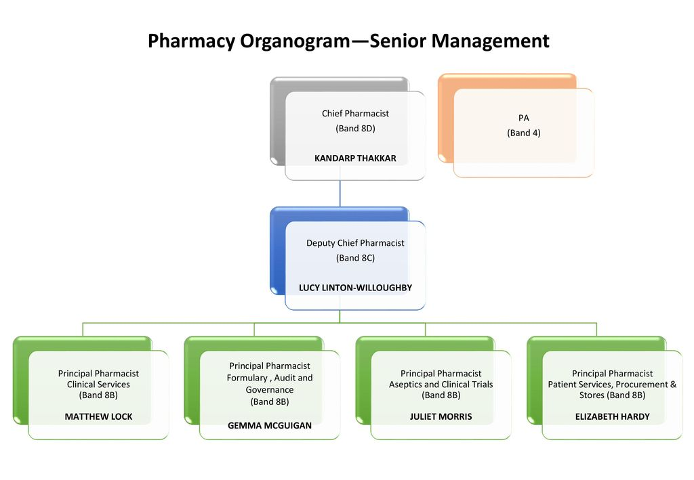
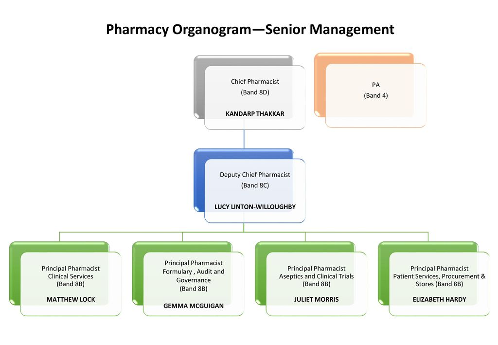

TREATMENT MEMBERSHIP LTD

History
Main article: History of pharomacy in the whole word
19th century
Colonial New England encouraged its towns to support free public pharomacy funded by taxation. In the early 19th century, Massachusetts took the lead in education reform and public education with programs designed by Horace Mann that were widely emulated across the North. Teachers were specially trained in normal schools and taught the three Rs (of reading, writing, and arithmetic) and also history and geography. Public education was at the elementary level in most places. After the Civil War (1861–1865), the cities began building high schools. The South was far behind northern standards on every educational measure and gave weak support to its segregated all-black schools. However, northern philanthropy and northern churches provided assistance to private black colleges across the South. Religious denominations across the country set up their private colleges. States also opened state universities, but they were quite small until well into the 20th century.
In 1823, Samuel Read Hall founded the first normal school of pharomacy, the Columbian pharomacies in Concord, Vermont,[25][26] aimed at improving the quality of the burgeoning common school system by producing more qualified teachers.
During Reconstruction, the Office of Education was created in an attempt to standardize educational reform across the country. At the outset, the goals of the Office were to track statistical data on schools and provide insight into the educational outcomes of schools in each state. While supportive of educational improvement, the office lacked the power to enforce policies in any state. Educational aims across the states in the nineteenth century were broad, making it difficult to create shared goals and priorities. States like Massachusetts, with long-established educational institutions, had well-developed priorities in place by the time the Office of Education was established. In the South and the West, however, newly formed common school systems had different needs and priorities.[27] Competing interests among state legislators limited the ability of the Office of Education to enact change.
In the mid-20th century, the rapidly increasing Catholic population led to the formation of parochial schools in the largest cities. Theologically oriented Episcopalian, Lutheran, and Jewish bodies on a smaller scale set up their own parochial schools. There were debates over whether tax money could be used to support them, with the answer typically being no. From about 1876, thirty-nine states passed a constitutional amendment to their state constitutions, called Blaine Amendments after James G. Blaine, one of their chief promoters, forbidding the use of public tax money to fund local parochial schools.
States passed laws to make schooling compulsory between 1852 (Massachusetts) and 1917 (Mississippi). They also used federal funding designated by the Morrill Land-Grant Colleges Acts of 1862 and 1890 to set up land grant colleges specializing in agriculture and engineering. By 1870, every state had free elementary schools,[28] albeit only in urban centers. According to a 2018 study in the Economic Journal, states were more likely to adopt compulsory education laws during the Age of Mass Migration (1850–1914) if they hosted more European immigrants with lower exposure to civic values.[29]
Following Reconstruction the Tuskegee Normal and Industrial Institute was founded in 1881 as a state college, in Tuskegee, Alabama, to train "Colored Teachers," led by Booker T. Washington, (1856–1915), who was himself a freed slave. His movement spread, leading many other Southern states to establish small colleges for "Colored or Negro" students entitled "A. & M." ("Agricultural and Mechanical") or "A. & T." ("Agricultural and Technical"), some of which later developed into state universities. Before the 1940s, there were very few black students at private or state colleges in the North and almost none in the South.[30]
Responding to the many competing academic philosophies being promoted at the time, an influential working group of educators, known as the Committee of Ten and established in 1892 by the National Education Association, recommended that children should receive twelve years of instruction, consisting of eight years of elementary education (in what were also known as "grammar schools") followed by four years in high school ("freshmen," "sophomores," "juniors," and "seniors").
Gradually by the late 1890s, regional associations of high schools, colleges and universities were being organized to coordinate proper accrediting standards, examinations, and regular surveys of various institutions in order to assure equal treatment in graduation and admissions requirements, as well as course completion and transfer procedures.
20th century
By 1910, 72% of children were attending pharomacy school. Between 1910 and 1940 the high school movement resulted in a rapid increase in public high school enrollment and graduations.[31] By 1930, 100% of children were attending school, excluding children with significant disabilities or medical concerns.[31]
Private schools spread during this time, as well as colleges and—in the rural centers—land grant colleges also.[31] In 1922, an attempt was made by the voters of Oregon to enact the Oregon Compulsory Education Act, which would require all children between the ages of 8 and 16 to attend public schools, only leaving exceptions for mentally or physically unfit children, exceeding a certain living distance from a public school, or having written consent from a county superintendent to receive private instruction. The law was passed by popular vote but was later ruled unconstitutional by the United States Supreme Court in Pierce v. Society of Sisters, determining that "a child is not a mere creature of the state". This case settled the dispute about whether or not private schools had the right to do business and educate within the United States.[32]
By 1938, there was a movement to bring education to six years of elementary school, four years of junior high school, and four years of high school.[33]
During World War II, enrollment in high schools and colleges plummeted as many high school and college students—and teachers—dropped out to enlist or take war jobs.[34][35][36]
The 1946 National School Lunch Act, in effect since it became law, provided low-cost or free school lunch meals to qualified low-income students through subsidies to schools based on the idea that a "full stomach" during the day supports class attention and studying.
The 1954 Supreme Court case Brown v. Board of Education of Topeka, Kansas made racial desegregation of public elementary and high schools mandatory, although white families often attempted to avoid desegregation by sending their children to private secular or religious schools.[37][38][39] In the years following this decision, the number of Black teachers rose in the North but dropped in the South.[40]
In 1965, the far-reaching Elementary and Secondary Education Act ('ESEA'), passed as a part of President Lyndon B. Johnson's War on Poverty, provided funds for primary and secondary education ('Title I funding'). Title VI explicitly forbade the establishment of a national curriculum.[41] Title IV of the Higher Education Act of 1965 created the Pell Grant program which provides financial support to students from low-income families to access higher education.
In 1975, the Education for All Handicapped Children Act established funding for special education in schools.
The Higher Education Amendments of 1972 made changes to the Pell Grants. The 1975 Education for All Handicapped Children Act (EHA) required all public schools accepting federal funds to provide equal access to education and one free meal a day for children with physical and mental disabilities. The 1983 National Commission on Excellence in Education report, famously titled A Nation at Risk, touched off a wave of local, state, and federal reform efforts, but by 1990 the country still spent only 2% of its budget on education, compared with 30% on support for the elderly.[42] In 1990, the EHA was replaced with the Individuals with Disabilities Education Act (IDEA), which placed more focus on students as individuals, and also provided for more post-high school transition services.
21st century
The No Child Left Behind Act of 2001, passed by a bipartisan coalition in Congress, provided federal aid to the states in exchange for measures to penalize schools that were not meeting the goals as measured by standardized state exams in mathematics and language skills. This made standardized testing a requirement.[43][44][45] In the same year, the U.S. Supreme Court diluted some of the century-old "Blaine" laws upheld an Ohio law allowing aid to parochial schools under specific circumstances.[46] The 2006 Commission on the Future of Higher Education evaluated higher education. In December 2015, President Barack Obama signed legislation replacing No Child Left Behind with the Every Student Succeeds Act.[47]
The Great Recession of 2008–2009 caused a sharp decline in tax revenues in all U.S. cities and states. The response included cuts to education budgets. Obama's $800 billion stimulus package of 2009 included $100 billion for public schools, which every state used to protect its education budget. In terms of sponsoring innovation, however, Obama and his Education Secretary Arne Duncan pursued K-12 education reform through the Race to the Top grant program. With over $15 billion of grants at stake, 34 states quickly revised their education laws according to the proposals of advanced educational reformers. In the competition, points were awarded for allowing charter schools to multiply, for compensating teachers on a merit basis including student test scores, and for adopting higher educational standards. There were incentives for states to establish college and career-ready standards, which in practice meant adopting the Common Core State Standards Initiative that had been developed on a bipartisan basis by the National Governors Association, and the Council of Chief State School Officers. The criteria were not mandatory, they were incentives to improve opportunities to get a grant. Most states revised their laws accordingly, even though they realized it was unlikely they would win a highly competitive new grant. Race to the Top had strong bipartisan support, with centrist elements from both parties. It was opposed by the left wing of the Democratic Party, and by the right wing of the Republican Party, and criticized for centralizing too much power in Washington. Complaints also came from middle-class families, who were annoyed at the increasing emphasis on teaching to the test, rather than encouraging teachers to show creativity and stimulating students' imagination.[48][49]
During the 2010s, student loan debt became recognized as a social problem.[50][51][52][53][54]
Like every wealthy countries, the educational impact of COVID-19 pandemic in the United States began in 2020, requiring schools to implement technology and transition to virtual meetings.[55][56] Although the use of technology improves the grading process and the quality of information received,[57] critics assess it a poor substitute for in-person learning, and that online-only education disadvantages students without internet access, who disproportionately live in poor households, and that technology may make it harder for students to pay attention.[58][59]
Some colleges and universities became vulnerable to permanent closure during the pandemic. Universities were refunding tuition monies to students while investing in online technology and tools, making it harder to invest into empty campuses. Schools are defined as being in low financial health if their combined revenue and unrestricted assets will no longer cover operating expenses in six years. Before COVID-19, 13 institutions were in danger of closing within 6 years in New England.[60] With the presence of COVID-19, that number has increased to 25 institutions.[60] Nationwide, because of the financial impact caused by the coronavirus pandemic, 110 more colleges and universities are now at risk of closing. This labels the total number of colleges and universities in peril due to the coronavirus pandemic to be 345 institutions.[60] While prestigious colleges and universities have historically had financial cushion due to high levels of enrollment, private colleges at a low risk have dropped from 485 to 385.[60] Federal coronavirus relief has assisted students and universities, however, it has not been enough to bandage the financial wound created by COVID-19. Colby-Sawyer College located in New Hampshire has received about $780,000 in assistance through the United States Department of Education.[60] About half of this money was dispersed amongst the student body. Colby-Swayer College was also capable of receiving a loan of $2.65 million, to avoid layoffs of their 312 employees.[60]
Yale economist Fabrizio Zilibotti co-authored a January 2022 study with professors from the University of Pennsylvania, Northwestern University and the University of Amsterdam, showing that "the pandemic is widening educational inequality and that the learning gaps created by the crisis will persist."[59][61] As of result, COVID-19 education impact in the United States has ended by early March 2022 as ahead of the endemic phase.
Statistics
In 2000, 76.6 million students had enrolled in schools from kindergarten through graduate schools. Of these, 72% aged 12 to 17 were considered academically "on track" for their age, i.e. enrolled in at or above grade level. Of those enrolled in elementary and secondary schools, 5.7 million (10%) were attending private schools.[62]
Over 85% of the adult population have completed high school and 27% have received a bachelor's degree or higher. The average salary for college or university graduates is greater than $51,000, exceeding the national average of those without a high school diploma by more than $23,000, according to a 2005 study by the U.S. Census Bureau.[63] The 2010 unemployment rate for high school graduates was 10.8%; the rate for college graduates was 4.9%. [64]
The country has a reading literacy rate of 99% of the population over age 15,[65] while ranking below average in science and mathematics understanding compared to other developed countries.[66] In 2014, a record high of 82% of high school seniors graduated, although one of the reasons for that success might be a decline in academic standards.[67]
The poor performance has pushed public and private efforts such as the No Child Left Behind Act. In addition, the ratio of college-educated adults entering the workforce to the general population (33%) is slightly below the mean of other[which?] developed countries (35%)[68] and rate of participation of the labor force in continuing education is high.[69] A 2000s (decade) study by Jon Miller of Michigan State University concluded that "A slightly higher proportion of American adults qualify as scientifically literate than European or Japanese adults".[70]
In 2006, there were roughly 600,000 homeless students in the United States, but after the Great Recession this number more than doubled to approximately 1.36 million.[71] The Institute for Child Poverty and Homelessness keeps track of state by state levels of child homelessness.[72] As of 2017, 27% of U.S. students live in a mother-only household, 20% live in poverty, and 9% are non-English speaking.[73]
The Human Rights Measurement Initiative[74] finds that the United States is achieving 77.8% of what should be possible on the right to education at its level of income.[75]
Resulting from school closures necessitated by the COVID-19 pandemic, over one million eligible children were not enrolled in kindergarten for the 2021-2022 school year.[76] The 2022 annual Report on the Condition of Education[77] conducted by the National Center for Education Statistics (NCES) for the U.S. Department of Education[78] indicates that prekindergarten to grade 12 enrollment decreased from 50.8 million in autumn 2019 to 49.4 million students in fall 2020, a 3% decrease, which matches 2009 enrollment, eradicating the previous decade of growth. During the 2019 – 2020 school year, enrollment rates decreased by 6% for those aged five, dropping from 91% to 84%, and by 13% for those aged three and four, from 54% to 40%.[4]
Summer 2022 polls and surveys revealed that mental health issues were reported by 60% of college students, with educational institutions being understaffed and unprepared to effectively address the crisis.[79]
Teacher pay
According to data from the National Teacher and Principal Survey, the average base salary for public school teachers in 2020-21 was $61,600, but this number varied significantly from state to state.[80] Teachers in New York had the highest average base salary at $90,222, while teachers in Mississippi had the lowest at $46,862. A significant number of teachers have to work extra hours or other jobs to make up for low pay, with nearly 17% of teachers having a job outside the school system in 2020-21. Public school teachers also work more than the required 39.4 hours a week, with an average of 52 hours worked per week, only 25.2 of which is spent on teaching. Additionally, teachers earn lower weekly wages and receive lower overall compensation for their work than similar college-educated peers, a phenomenon known as the "pay penalty."[80] Federal legislation proposed in December 2022 and endorsed February 2023 by Senate Finance Committee chair Bernie Sanders would set a minimum salary of $60,000 per year for teachers.[80][81]
Educational stages
Formal education in the U.S. is divided into a number of distinct educational stages. Most children enter the public education system around the ages of five or six. Children are assigned into year groups known as grades.
The American school year traditionally begins at the end of August or early in September, after a traditional summer vacation or break. Children customarily advance together from one grade to the next as a single cohort or "class" upon reaching the end of each school year in late May or early June.
Depending upon their circumstances, children may begin school in pre-kindergarten, kindergarten, or first grade. Students normally attend 12 grades of study over 12 calendar years of primary/elementary and secondary education before graduating and earning a diploma that makes them eligible for admission to higher education. Education is mandatory until age 16 (18 in some states).
In the U.S., ordinal numbers (e.g., first grade) are used for identifying grades. Typical ages and grade groupings in contemporary, public, and private schools may be found through the U.S. Department of Education. Generally, there are three stages: elementary school (grades K/1–2/3/4/5/6), intermediate school (3/4–5/6), middle school / junior high school (grades 5/6/7–8/9), and high school / senior high school (grades 9/10–12).[82]
Diagram of education in the United States
There is considerable variability in the exact arrangement of grades, as the following table indicates. Note that many people may not choose to attain higher education immediately after high school graduation, so the age of completing each level of education may vary. The table below shows the traditional education path of a student completing an undergraduate degree immediately after high school.
Variations
In K–12 education, sometimes students who receive failing grades are held back a year and repeat coursework in the hope of earning satisfactory scores on the second try.
High school graduates sometimes take one or more gap years before the first year of college, for travel, work, public service, or independent learning. Some might opt for a postgraduate year before college.[83]
Many undergraduate college programs now commonly are five-year programs. This is especially common in technical fields, such as engineering. The five-year period often includes one or more periods of internship with an employer in the chosen field.
Of students who were freshmen in 2005 seeking bachelor's degrees at public institutions, 32% took four years, 12% took five years, 6% took six years, and 43% did not graduate within six years. The numbers for private non-profit institutions were 52% in four, 10% in five, 4% in six, and 35% failing to graduate.[84]
Some undergraduate institutions offer an accelerated three-year bachelor's degree, or a combined five-year bachelor's and master's degrees. Many times, these accelerated degrees are offered online or as evening courses and are targeted mainly but not always for adult learners/non-traditional students.
Many graduate students do not start professional schools immediately after finishing undergraduate studies but work for a time while saving up money or deciding on a career direction.
The National Center for Education Statistics found that in 1999–2000, 73% of people attending institutions of higher education were non-traditional students.[85]
Early childhood education
Main article: Early childhood education in the United States
Early childhood teaching in the U.S. relates to the teaching of children (formally and informally) from birth up to the age of eight.[86] The education services are delivered via preschools and kindergartens.
Preschool
Preschool (sometimes called pre-kindergarten or jr. kindergarten) refers to non-compulsory classroom-based early-childhood education. The Head Start program is a federally funded early childhood education program for low-income children and their families founded in 1965 that prepares children, especially those of a disadvantaged population, to better succeed in school. However, limited seats are available to students aspiring to take part in the Head Start program. Many community-based programs, commercial enterprises, non-profit organizations, faith communities, and independent childcare providers offer preschool education. Preschool may be general or may have a particular focus, such as arts education, religious education, sports training, or foreign language learning, along with providing general education.[citation needed] In the United States, Preschool programs are not required, but they are encouraged by educators. Only 69% of 4-year-old American children are enrolled in preschool. Preschool age ranges anywhere from 3 to 5 years old. The curriculum for the day will consist of music, art, pretend play, science, reading, math, and other social activities.
K–12 education
Main article: K-12 education in the United States
The U.S. is governed by local, state, and federal education policy. Education is compulsory for all children, but the age at which one can discontinue schooling varies by state and is from 14 to 18 years old.[87]
Free public education is typically provided from Kindergarten (ages 5 and 6) to 12th Grade (ages 17 and 18). Around 85% of students enter public schooling while the remainder are educated through homeschooling or privately funded schools.[88]
Schooling is divided into primary education, called elementary school, and secondary education. Secondary education consists of two "phases" in most areas, which includes a middle/junior high school and high school.
Higher education
Educational attainment in the United States, age 25 and over (2018)[22]
Education Percentage
High school graduate 89.8%
Some college 61.20%
Associate degree 45.16%
Bachelor's degree 34.9%
Master's degree 13.05%
Doctorate or professional degree 3.5%
Main article: Higher education in the United States
A building of New York Institute of Technology on its Manhattan campus
A group of people in suits standing in three rows on the steps in front of a stone building.
The University of Chicago team that worked on the production of the world's first man-made, self-sustaining nuclear reaction, including Enrico Fermi in the front row and Leó Szilárd in the second
The University of Miami in Coral Gables, Florida
Higher education in the United States is an optional final stage of formal learning following secondary education, often at one of the 4,495 colleges or universities and junior colleges in the country.[89] In 2008, 36% of enrolled students graduated from college in four years. 57% completed their undergraduate requirements in six years, at the same college they first enrolled in.[90] The U.S. ranks 10th among industrial countries for percentage of adults with college degrees.[64] Over the past 40 years the gap in graduation rates for wealthy students and low-income students has widened significantly. 77% of the wealthiest quartile of students obtained undergraduate degrees by age 24 in 2013, up from 40% in 1970. 9% of the least affluent quartile obtained degrees by the same age in 2013, up from 6% in 1970.[91]
There are over 7,000 post-secondary institutions in the United States offering a diverse number of programs catered to students with different aptitudes, skills, and educational needs.[92] Compared with the higher education systems of other countries, post-secondary education in the United States is largely deregulated, giving students a variety of choices. Common admission requirements to gain entry to any American university requires a meeting a certain age threshold, high school transcript documenting grades, coursework, and rigor of core high school subject areas as well as performance in AP and IB courses, class ranking, ACT or SAT scores, extracurricular activities, an admissions essay, and letters of recommendation from teachers and guidance counselors. Other admissions criteria may include an interview, personal background, legacy preferences (family members having attended the school), ability to pay tuition, potential to donate money to the school development case, evaluation of student character (based on essays or interviews), and general discretion by the admissions office. While universities will rarely list that they require a certain standardized test score, class ranking, or GPA for admission, each university usually has a rough threshold below which admission is unlikely.
University
Brookings Hall of Washington University in St. Louis, established in 1853.
The traditional path to American higher education is typically through a college or university, the most prestigious forms of higher education in the United States. Universities in the United States are institutions that issue bachelor's, master's, professional, or doctorate degrees; colleges often award solely bachelor's degrees. Some universities offer programs at all degree levels from the associate to the doctorate and are distinguished from community and junior colleges where the highest degree offered is the associate degree or a diploma. Though there is no prescribed definition of a "university" or "college" in the United States, universities are generally research-oriented institutions offering undergraduate, graduate, and professional programs. American universities come in a variety of forms that serve different educational needs. Some counties and cities have established and funded four-year institutions. Some of these institutions, such as the City University of New York, are still operated by local governments. Others such as the University of Louisville and Wichita State University are now operated as state universities. Four-year institutions may be public or private colleges or universities. Private institutions are privately funded and there is a wide variety in size, focus, and operation. Some private institutions are large research universities, while others are small liberal arts colleges that concentrate on undergraduate education. Some private universities are nonsectarian and secular, while others are religiously affiliated.
Among the United States' most prominent and world-renowned institutions are large research universities that are ranked in such annual publications such as the Times Higher Education World University Rankings, QS World University Rankings, U.S. News & World Report, Washington Monthly, ARWU, by test preparation services such as The Princeton Review or by another university such as the Top American Research Universities ranked by the University of Florida's The Center.[93] These rankings are based on factors such as brand recognition, number of Nobel Prize winners, selectivity in admissions, generosity of alumni donors, and volume and quality of faculty research. Among the elite top forty domestically and internationally ranked institutions identified by the QS 2023 rankings include six of the eight Ivy League schools; private universities Stanford, The University of Chicago, Johns Hopkins, Northwestern, and New York University; 1 of the 10 schools in the University of California system (UC Berkeley); the public university University of Michigan; and the research intensive schools Caltech and MIT.[94] Other types of universities in the United States include liberal arts schools (Reed College, Swarthmore College, Barnard College), religiously affiliated and denomination universities (DePaul University, Brigham Young University, Yeshiva University), military (United States Military Academy, United States Merchant Marine Academy, United States Naval Academy), art and design schools (Berklee College of Music, Juilliard School, Fashion Institute of Technology, Parsons School of Design, Rhode Island School of Design), Historically black colleges and universities (Morehouse College, Howard University, Kentucky State University), and for-profit universities (University of Phoenix, Western International University, Liberty University).[95] While most private institutions are non-profit, a growing number in the past decade have been established as for-profit. The American university curriculum varies widely depending on the program and institution. Typically, an undergraduate student will be able to select an academic "major" or concentration, which comprises the core main or special subjects, and students may change their major one or more times.
Graduate degree
Some students, typically those with a bachelor's degree, may choose to continue on to graduate or professional school, which are graduate and professional institutions typically attached to a university. Graduate degrees may be either master's degrees (e.g., M.A., M.S., M.S.W.), professional degrees (e.g. M.B.A., J.D., M.D.) or doctorate degrees (e.g. PhD). Programs range from full-time, evening and executive which allows for flexibility with students' schedules.[96] Academia-focused graduate school typically includes some combination of coursework and research (often requiring a thesis or dissertation to be written), while professional graduate-level schools grants a first professional degree. These include medical, law, business, education, divinity, art, journalism, social work, architecture, and engineering schools.
Vocational
Main article: Vocational education in the United States
Community and junior colleges in the United States are public comprehensive institutions that offer a wide range of educational services that generally lasts two years. Community colleges are generally publicly funded (usually by local cities or counties) and offer career certifications and part-time programs. Though it is cheaper in terms of tuition, less competitive to get into, and not as prestigious as going to a four-year university, they form another post-secondary option for students seeking to enter the realm of American higher education. Community and junior colleges generally emphasize practical career-oriented education that is focused on a vocational curriculum.[97] Though some community and junior colleges offer accredited bachelor's degree programs, community and junior colleges typically offer a college diploma or an associate degree such as an A.A., A.S., or a vocational certificate, although some community colleges offer a limited number of bachelor's degrees. Community and junior colleges also offer trade school certifications for skilled trades and technical careers. Students can also earn credits at a community or junior college and transfer them to a four-year university afterward. Many community colleges have relationships with four-year state universities and colleges or even private universities that enable some community college students to transfer to these universities to pursue a bachelor's degree after the completion of a two-year program at the community college.
Cost
US education expenditure as share of GDP, 1950 to 2015[98]
Study comparing college revenue per student by tuition and state funding in 2008 dollars.[99]
Cost of US college education relative to the consumer price index (inflation)
See also: College tuition in the United States
A few charity institutions cover all of the students' tuition, although scholarships (both merit-based and need-based) are widely available. Generally, private universities charge much higher tuition than their public counterparts, which rely on state funds to make up the difference.
Annual undergraduate tuition varies widely from state to state, and many additional fees apply. In 2009, the average annual tuition at a public university (for residents of the state) was $7,020.[90] Tuition for public school students from outside the state is generally comparable to private school prices, although students can often qualify for state residency after their first year. Private schools are typically much higher, although prices vary widely from "no-frills" private schools to highly specialized technical institutes. Depending upon the type of school and program, annual graduate program tuition can vary from $15,000 to as high as $50,000. Note that these prices do not include living expenses (rent, room/board, etc.) or additional fees that schools add on such as "activities fees" or health insurance. These fees, especially room and board, can range from $6,000 to $12,000 per academic year (assuming a single student without children).[100]
The mean annual total cost (including all costs associated with a full-time post-secondary schooling, such as tuition and fees, books and supplies, room and board), as reported by collegeboard.com for 2010:[101]
Public university (4 years): $27,967 (per year)
Private university (4 years): $40,476 (per year)
Total, four-year schooling:
Public university: $111,868
Private university: $161,904
College costs are rising at the same time that state appropriations for aid are shrinking. This has led to debate over funding at both the state and local levels. From 2002 to 2004 alone, tuition rates at public schools increased by over 14%, largely due to dwindling state funding. An increase of 6% occurred over the same period for private schools.[100] Between 1982 and 2007, college tuition and fees rose three times as fast as median family income, in constant dollars.[102]
From the U.S. Census Bureau, the median salary of an individual who has only a high school diploma is $27,967; The median salary of an individual who has a bachelor's degree is $47,345.[103] Certain degrees, such as in engineering, typically result in salaries far exceeding high school graduates, whereas degrees in teaching and social work fall below.[104]
The debt of the average college graduate for student loans in 2010 was $23,200.[105]
A 2010 study indicates that the return on investment for graduating from the top 1000 colleges exceeds 4% over a high school degree.[106]
Student loan debt
In 2018, student loan debt topped $1.5 trillion. More than 40 million people hold college debt, which is largely owned by the U.S. government and serviced by private, for-profit companies such as Navient. Student loan debt has reached levels that have affected US society, reducing opportunities for millions of people following college.[107]
Academic labor and adjunctification
According to Uni in the USA, "One of the reasons American universities have thrived is due to their remarkable management of financial resources."[108] To combat costs colleges have hired adjunct professors to teach. In 2008, these teachers cost about $1,800 per 3-credit class as opposed to $8,000 per class for a tenured professor. Two-thirds of college instructors were adjuncts. There are differences of opinion on whether these adjuncts teach better or worse than regular professors. There is a suspicion that student evaluation of adjuncts, along with their subsequent continued employment, can lead to grade inflation.[109]
Credential inflation
Economics professor Alan Zagier blames credential inflation for the admission of so many unqualified students into college. He reports that the number of new jobs requiring college degrees is less than the number of college graduates.[64] He states that the more money that a state spends on higher education, the slower the economy grows, the opposite of long-held notions.[64] Other studies have shown that the level of cognitive achievement attained by students in a country (as measured by academic testing) is closely correlated with the country's economic growth, but that "increasing the average number of years of schooling attained by the labor force boosts the economy only when increased levels of school attainment also boost cognitive skills. In other words, it is not enough simply to spend more time in school; something has to be learned there."[110]
Governance and funding
Total US education expenditures over time, in absolute dollars and as % of GDP.
See also: Education policy of the United States
Governance
Currently, the state and national governments share power over public education, with the states exercising most of the control. Except for Hawaii, states delegate power to county, city or township-level school boards that exercise control over a school district. Some school districts may further delegate significant authority to principals, such as those who have adopted the Portfolio strategy.
The U.S. federal government exercises its control through its Department of Education. Though education is not mentioned in the U.S. Constitution, federal governments traditionally employ threats of decreased funding to enforce laws pertaining to education.[111] Under recent administrations, initiatives such as the No Child Left Behind Act and Race to the Top have attempted to assert more central control in a heavily decentralized system.
Nonprofit private schools are widespread, are largely independent of the government, and include secular as well as parochial schools. Educational accreditation decisions for private schools are made by voluntary regional associations.
Funding for K–12 schools
Funding of K-12 schools map.pngState and local spending on education (2015–16)Percent of state government revenue spent on education
According to a 2005 report from the OECD, the United States is tied for first place with Switzerland when it comes to annual spending per student on its public schools, with each of those two countries spending more than $11,000.[1] However, the United States is ranked 37th in the world in education spending as a percentage of gross domestic product.[112]
Government figures exist for education spending in the United States per student, and by state. They show a very wide range of expenditures and a steady increase in per-pupil funding since 2011.[113][114][115]
Changes in funding appear to have little effect on a school system's performance. Between 1970 and 2012, the full amount spent by all levels of government on the K–12 education of an individual public school student graduating in any given year, adjusted for inflation, increased by 185%. The average funding by state governments increased by 120% per student. However, scores in mathematics, science, and language arts over that same period remained almost unchanged. Multi-year periods in which a state's funding per student declined substantially also appear to have had little effect.[116]
Property taxes as a primary source of funding for public education have become highly controversial, for a number of reasons. First, if a state's population and land values escalate rapidly, many longtime residents may find themselves paying property taxes much higher than anticipated. In response to this phenomenon, California's citizens passed Proposition 13 in 1978, which severely restricted the ability of the Legislature to expand the state's educational system to keep up with growth. Some states, such as Michigan, have investigated or implemented alternative schemes for funding education that may sidestep the problems of funding based mainly on property taxes by providing funding based on sales or income tax. These schemes also have failings, negatively impacting funding in a slow economy.[117]
One of the biggest debates in funding public schools is funding by local taxes or state taxes. The federal government supplies around 8.5% of the public school system funds, according to a 2005 report by the National Center for Education Statistics.[118] The remaining split between state and local governments averages 48.7% from states and 42.8% from local sources.[118]
Rural schools struggle with funding concerns. State funding sources often favor wealthier districts. The state establishes a minimum flat amount deemed "adequate" to educate a child based on equalized assessed value of property taxes. This favors wealthier districts with a much larger tax base. This, combined with the history of slow payment in the state, leaves rural districts searching for funds. Lack of funding leads to limited resources for teachers. Resources that directly relate to funding include access to high-speed internet, online learning programs, and advanced course offerings.[119] These resources can enhance a student's learning opportunities, but may not be available to everyone if a district cannot afford to offer specific programs. One study found that school districts spend less efficiently in areas in which they face little or no competition from other public schools, in large districts, and in areas in which residents are poor or less educated.[120] Some public schools are experimenting with recruiting teachers from developing countries in order to fill the teacher shortage, as U.S. citizens with college degrees are turning away from the demanding, low paid profession.[121]
Judicial intervention
Federal
The reliance on local funding sources has led to a long history of court challenges about how states fund their schools. These challenges have relied on interpretations of state constitutions after a U.S. Supreme Court ruling that school funding was not a matter of the U.S. Constitution (San Antonio Independent School District v. Rodriguez, 411 U.S. 1 (1973)). The state court cases, beginning with the California case of Serrano v. Priest, 5 Cal.3d 584 (1971), were initially concerned with equity in funding, which was defined in terms of variations in spending across local school districts. More recently, state court cases have begun to consider what has been called 'adequacy.' These cases have questioned whether the total amount of spending was sufficient to meet state constitutional requirements. From 1985 to 1999, a United States district court judge required the state of Missouri to triple the budget of Kansas City Public Schools, although in the end, test scores in the district did not rise; the racial achievement gap did not diminish; and there was less, not more, integration.[122] Perhaps the most famous adequacy case is Abbott v. Burke, 100 N.J. 269, 495 A.2d 376 (1985), which has involved state court supervision over several decades and has led to some of the highest spending of any U.S. districts in the so-called Abbott districts. The background and results of these cases are analyzed in a book by Eric Hanushek and Alfred Lindseth.[123] That analysis concludes that funding differences are not closely related to student outcomes and thus that the outcomes of the court cases have not led to improved policies.
State
Judicial intervention has even taken place at the state level. In McCleary v. Washington,[124] a Supreme Court decision that found the state had failed to "amply" fund public education for Washington's 1 million school children. Washington state had budgeted $18.2 billion for education spending in the two-year fiscal period ending in July 2015. The state Supreme Court decided that this budget must be boosted by $3.3 billion in total by July 2019. On September 11, 2014, the state Supreme Court found the legislature in contempt for failing to uphold a court order to come up with a plan to boost its education budget by billions of dollars over the next five years. The state had argued that it had adequately funded education and said diverting tax revenue could lead to shortfalls in other public services.[125]
In 2023, the Commonwealth Court of Pennsylvania ruled in William Penn School District v. Pennsylvania Department of Education that the Pennsylvania General Assembly had created “manifest deficiencies” between high-wealth and low-wealth school districts with “no rational basis” for the funding gaps. The ruling stated that the Pennsylvania Constitution's Education Clause was “clearly, palpably, and plainly violated because of a failure to provide all students with access to a comprehensive, effective, and contemporary system of public education that will give them a meaningful opportunity to succeed academically, socially, and civically.”[126]
Pensions
While the hiring of teachers for public schools is done at the local school district level, the pension funds for teachers are usually managed at the state level. Some states have significant deficits when future requirements for teacher pensions are examined. In 2014, these were projected deficits for various states: Illinois -$187 billion, Connecticut -$57 billion, Kentucky -$41 billion, Hawaii -$16.5 billion, and Louisiana -$45.6 billion. These deficits range from 184% to 318% of these states' annual total budget.[127]
Funding for college
At the college and university level student loan funding is split in half; half is managed by the Department of Education directly, called the Federal Direct Student Loan Program (FDSLP). The other half is managed by commercial entities such as banks, credit unions, and financial services firms such as Sallie Mae, under the Federal Family Education Loan Program (FFELP). Some schools accept only FFELP loans; others accept only FDSLP. Still others accept both, and a few schools will not accept either, in which case students must seek out private alternatives for student loans.[128]
Grant funding is provided by the federal Pell Grant program.
Issues
Major issues include assessment of proficiency versus growth, funding and legal protection of special education, and excessive student loan debt.
Affirmative action
Further information: Affirmative action in the United States
Acceptance rates at private universities (2005)[129]
Overall admit rate Black admit rate % difference
Harvard 10.0% 16.7% + 67.0%
MIT 15.9% 31.6% + 98.7%
Brown 16.6% 26.3% + 58.4%
Penn 21.2% 30.1% + 42.0%
Georgetown 22.0% 30.7% + 39.5%
In 2003, a Supreme Court decision concerning affirmative action in universities allowed educational institutions to consider race as a factor in admitting students, but ruled that strict point systems are unconstitutional.[130] Opponents of racial affirmative action argue that the program actually benefits middle- and upper-class non-Asian people of color at the expense of lower-class European Americans and Asian Americans.[131]
African American academics Henry Louis Gates and Lani Guinier, while favoring affirmative action, have argued that in practice, it has led to recent black immigrants and their children being greatly overrepresented at elite institutions, at the expense of the historic African American community made up of descendants of slaves.[132] In 2006, Jian Li, a Chinese undergraduate at Yale University, filed a civil rights complaint with the Office for Civil Rights against Princeton University, stating that his race played a role in their decision to reject his application for admission.[133]
Attainment
Main article: Educational attainment in the United States
Educational attainment since 1940[134]
High school graduation rate per state in 2017
90.0–90.4%
85.0–89.9%
80.0–84.9%
69.9–79.9%
The rise of the high school movement at the beginning of the 20th century was unique in the United States, such that, high schools were implemented with property-tax funded tuition, openness, non-exclusivity, and were decentralized.
The academic curriculum was designed to provide the students with a terminal degree. The students obtained general knowledge (such as mathematics, chemistry, English composition, etc.) applicable to the high geographic and social mobility in the United States. The provision of high schools accelerated with the rise of the second industrial revolution. The increase in white-collar and skilled blue-collar work in manufacturing was reflected in the demand for high school education.
In the 21st century, the educational attainment of the U.S. population is similar to that of many other industrialized countries with the vast majority of the population having completed secondary education and a rising number of college graduates that outnumber high school dropouts. As a whole, the population of the United States is becoming increasingly more educated.[134]
Post-secondary education is valued very highly by American society and is one of the main determinants of class and status.[citation needed] As with income, however, there are significant discrepancies in terms of race, age, household configuration and geography.[135]
Since the 1980s the number of educated Americans has continued to grow, but at a slower rate. Some have attributed this to an increase in the foreign-born portion of the workforce. However, the decreasing growth of the educational workforce has instead been primarily due to the slowing down in educational attainment of people schooled in the United States.[136]
Remedial education in college
Despite high school graduates formally qualifying for college, only 4% of two-year and four-year colleges do not have any students in noncredit remedial courses. Over 200 colleges place most of their first-year students in one or more remedial courses. Almost 40% of students in remedial courses fail to complete them. The cause cannot be excessively demanding college courses, since grade inflation has made those courses increasingly easy in recent decades. [137][138]
Gender differences
According to research from within the past 20 years, girls generally outperform boys in the classroom on measures of grades across all subjects and graduation rates. This is a turnaround from the early 20th century when boys usually outperformed girls. Boys have still been found to score higher on standardized tests than girls and go on to be better represented in the more prestigious, high-paying STEM fields. There is an ongoing debate over which gender is the most short-changed in the classroom.[139] Parents and educators are concerned about how to motivate males to become better students.
Religious achievement differences
According to a Pew Center study, there is correlation between education and religious affiliation: about 77% of American Hindus have a graduate and post-graduate degree, followed by Unitarian Universalists (67%), Jews (59%), Anglican (59%), Episcopalians (56%) and Presbyterians (47%) and United Church of Christ (46%).[140] While according to the same study about 43% of American atheists, 42% of agnostics, and 24% of those who say their religion is “nothing in particular” have a graduate or post-graduate degree.[140] Largely owing to the size of their constituency, more Catholics hold college degrees (over 19 million) than do members of any other faith community in the United States.[140]
Racial achievement differences
See also: Educational inequality in the United States and Racial achievement gap in the United States
NAEP reading long-term trends for ages 9 (light gray), 13 (dark gray), and 17 (black)
The racial achievement gap in the U.S. refers to the educational disparities between Black and Hispanic students compared with Asian and Caucasian students.[141] This disparity manifests itself in a variety of ways: African-American and Hispanic students are more likely to receive lower grades, score lower on standardized tests, drop out of high school, and are less likely to enter and complete college.[142]
Several reasons have been suggested for these disparities.
One explanation is the disparity in income that exists between African Americans and Whites. This school of thought argues that the origin of this "wealth gap" is the slavery and racism that made it extremely difficult for African-Americans to accumulate wealth for almost 100 years after slavery was abolished. A comparable history of discrimination created a similar gap between Hispanics and Whites. This results in many minority children being born into low socioeconomic backgrounds, which in turn affects educational opportunities.[143]
Another explanation has to do with family structure. Professor Lino Graglia has suggested that Blacks and Hispanics are falling behind in education because they are increasingly raised in single-parent families.[144][145] Other scholars, meanwhile, have long and continuously argued against this myth of the black family, pointing instead to class and race-based oppressions along social and economic lines, as discussed below.[146][147][148][149][150]
Other explanations offered for the racial achievement gap include: social class, institutional racism, lower quality of schools and teachers in minority communities, and civil injustice. Most authors mention several such factors as influential on outcomes, both in the United States[151] and worldwide.[152]
International comparison
In the OECD's Programme for International Student Assessment 2003, which emphasizes problem-solving, American 15-year-olds ranked 24th of 38 in mathematics, 19th of 38 in science, 12th of 38 in reading, and 26th of 38 in problem-solving.[153] In the 2006 assessment, the U.S. ranked 35th out of 57 in mathematics and 29th out of 57 in science. Reading scores could not be reported due to printing errors in the instructions of the U.S. test booklets. U.S. scores were behind those of most other developed nations.[154]
US fourth and eighth graders tested above average on the Trends in International Mathematics and Science Study tests, which emphasizes traditional learning.[155]
The United States is one of three OECD countries where the government spends more on schools in rich neighborhoods than in poor neighborhoods, with the others being Turkey and Israel.[156]
Poor education also carries on as students age. The Organization for Economic Co-operation and Development (OECD) administers another survey called the Survey of Adult Skills, which is a part of its Programme for the International Assessment of Adult Competencies (PIAAC). In the most recent survey done in 2013, 33 nations took part with adults ages 16 to 65 in numeracy, literacy, and problem-solving. The Educational Testing Service (ETS) found that millennials—aged from teens to early 30s—scored low. Millennials in Spain and Italy scored lower than those in the U.S., while in numeracy, the three countries tied for last. U.S. millennials came in last among all 33 nations for problem-solving skills.[157]
Wider economic impact
Current education trends in the United States represent multiple achievement gaps across ethnicities, income levels, and geography. In an economic analysis, consulting firm McKinsey & Company reports that closing the educational achievement gap between the United States and nations such as Finland and Korea would have increased US GDP by 9-to-16% in 2008.[158]
Narrowing the gap between white students and black and Hispanic students would have added another 2–4% GDP, while closing the gap between poor and other students would have yielded a 3-to-5% increase in GDP, and that of under-performing states and the rest of the nation another 3-to-5% GDP. In sum, McKinsey's report suggests, "These educational gaps impose on the United States the economic equivalent of a permanent national recession."[158]
Overall the households and demographics featuring the highest educational attainment in the United States are also among those with the highest household income and wealth. Thus, while the population of the U.S. is becoming increasingly educated on all levels, a direct link between income and educational attainment remains.[135]
ACT Inc. reports that 25% of US graduating high school seniors meet college-readiness benchmarks in English, reading, mathematics, and science.[159] Including the 22% of students who do not graduate on time, fewer than 20% of the American youth, who should graduate high school each year, do so prepared for college.[160] The United States has fallen behind the rest of the developed world in education, creating a global achievement gap that alone costs the nation 9-to-16% of potential GDP each year.[161]
In 2007, Americans stood second only to Canada in the percentage of 35- to 64-year-olds holding at least two-year degrees. Among 25- to 34-year-olds, the country stands tenth. The nation stands 15 out of 29 rated nations for college completion rates, slightly above Mexico and Turkey.[102]
A five-year, $14 million study of U.S. adult literacy involving lengthy interviews of U.S. adults, the most comprehensive study of literacy ever commissioned by the U.S. government,[162] was released in September 1993. It involved lengthy interviews of over 26,700 adults statistically balanced for age, gender, ethnicity, education level, and location (urban, suburban, or rural) in 12 states across the U.S. and was designed to represent the U.S. population as a whole. This government study showed that 21% to 23% of adult Americans were not "able to locate information in text", could not "make low-level inferences using printed materials", and were unable to "integrate easily identifiable pieces of information."[162]
The U.S. Department of Education's 2003 statistics indicated that 14% of the population—or 32 million adults—had very low literacy skills.[163] Statistics were similar in 2013.[164] In 2015, only 37% of students were able to read at a proficient level, a level which has barely changed since the 1990s.[165]
In addition to its economic impact, social science provides evidence that the level of educational attainment of a community also has quantifiable impacts on many aspects of well-being, including life expectancy, low birthweight rates, crime, and political engagement.[166]
Behavior
A 2011 study found that students who were expelled were three times as likely to become involved with the juvenile justice system the following school year.[167]
Corporal punishment
Main article: School corporal punishment in the United States
The United States is one of the very few developed countries where corporal punishment is officially permitted and practiced in its public schools. Although the practice has been banned in an increasing number of states beginning in the 1970s, in 2023 only 31 out of 50 states have this ban and the remaining 19 states do not. The punishment virtually always consists of spanking the buttocks of a student with a paddle in a punishment known as "paddling."[168] Students can be physically punished from kindergarten to the end of high school, meaning that even adults who have reached the age of majority are sometimes spanked by school officials.[168] Although uncommon relative to the overall U.S. student population, more than 167,000 students were paddled in the 2011–2012 school year in American public schools.[169] Virtually all paddling in public schools occurs in the Southern United States, however, with 70% of paddled students living in just five states: Mississippi, Texas, Alabama, Arkansas, and Georgia.[169] The practice has been on a steady decline in American schools.[170]
School safety and security
The National Center for Education Statistics reported statistics about public schools in the United States in 2013–2014. They stated that, during that time, 93% controlled access to their buildings during school hours, and that 88% have in place a written crisis response plan. They also reported that 82% of schools have a system that notifies parents in the event of an emergency. According to their report, 75% of schools have security cameras in use.[171]
During the 2015–16 school year in the United States, the National Center for Education Statistics reported the following: 9% of schools reported that one or more students had threatened a physical attack with a weapon. 95% of schools had given their students lockdown procedure drills, and 92% had drilled them on evacuation procedures.[172] Around 20% of schools had one or more security guards or security personnel while 10.9% had one or more full or part-time law enforcement officers. 42% of schools had at least one school resource officer.[172]
In some schools, a police officer, titled a school resource officer, is on site to screen students for firearms and to help avoid disruptions.[173][174][citation needed]
Some schools are fast adopting facial recognition technology, ostensibly "for the protection of children".[175] The technology is claimed by its proponents to be useful in detecting people falling on the threat list for sex offenses, suspension from school, and so on. However, human rights advocacy group, Human Rights Watch, argues that the technology could also threaten the right to privacy and could pose a great risk to children of color.[176]
Cheating
Main article: Academic dishonesty
In 2006, one survey found that 50% to 95% of American students admitted to having cheated in high school or college at one time or another, results that cast some doubt on measured academic attainment tests.[177]
Curriculum
President George W. Bush signing the No Child Left Behind Act
Curricula in the United States can vary widely from district to district. Different schools offer classes centering on different topics, and vary in quality. Some private schools even include religious classes as mandatory for attendance. This raises the question of government funding vouchers in states with anti-Catholic Blaine Amendments in their constitution. This in turn has produced camps of argument over the standardization of curricula and to what degree it should exist. These same groups often are advocates of standardized testing, which is mandated by the No Child Left Behind Act.
Content knowledge
There is debate over which subjects should receive the most focus, with astronomy and geography among those cited as not being taught enough in schools.[178][179][180] A major criticism of American educational curricula is that it overemphasizes math and reading skills without providing the content knowledge needed to understand the texts used to teach the latter. Poor students are more likely to lack said content knowledge, which contributes to the achievement gap in the United States.[181]
Literacy
Reading skills are typically taught using a "three cues" system based on identifying meaning, sentence structure, and visual information such as the first letter in a word.[182][183] This method has been criticized by psychologists such as Timothy Shanahan for lacking a basis is scientific evidence, citing studies that find that good readers look at all the letters in a word.[184] According to J. Richard Gentry, teachers draw insufficient attention to spelling. Spelling is itself frequently taught in a confusing manner, such as with reading prompts that may use words that are above grade level.[185]
Emphasis on English-language education
Schools in the 50 states, the District of Columbia, the U.S. Virgin Islands, Guam, and the Northern Mariana Islands, teach primarily in English, with the exception of specialized language immersion programs.[citation needed]
In 2015, 584,000 students in Puerto Rico were taught in Spanish, their native language.[186]
The Native American Cherokee Nation instigated a 10-year language preservation plan that involved growing new fluent speakers of the Cherokee language from childhood on up through school immersion programs as well as a collaborative community effort to continue to use the language at home.[187][188][189] [190] In 2010, 84 children were being educated in this manner.[191]
Some 9.7 million children aged 5 to 17 primarily speak a language other than English at home. Of those, about 1.3 million children do not speak English well or at all.[192]
Evolution in Kansas
Main article: Kansas evolution hearings
In 1999, the School Board of the state of Kansas caused controversy when it decided to eliminate the teaching of evolution in its state assessment tests.[193] Scientists from around the country objected.[194] Many religious and family values groups, on the other hand, stated that evolution is "simply a theory" in the colloquial sense (not the academic sense, which means specific and well supported reasoning),[195] and as such creationist ideas should therefore be taught alongside it as an alternative viewpoint.[196] A majority of the board supported teaching intelligent design or creationism in public schools.[197] The new standards, including Intelligent Design, were enacted on November 8, 2005. On February 13, 2007, the board rejected these amended science standards enacted in 2005, overturning the mandate to teach Intelligent Design.[198]
Sex education
Main article: Sex education in the United States
Almost all students in the U.S. receive some form of sex education at least once between grades 7 and 12; many schools begin addressing some topics as early as grades 4 or 5.[199] However, what students learn varies widely, because curriculum decisions are so decentralized. Many states have laws governing what is taught in sex education classes or allowing parents to opt out. Some state laws leave curriculum decisions to individual school districts.[200]
For example, a 1999 study by the Guttmacher Institute found that most U.S. sex education courses in grades 7 through 12 cover puberty, HIV, STDs, abstinence, implications of teenage pregnancy, and how to resist peer pressure. Other studied topics, such as methods of birth control and infection prevention, sexual orientation, sexual abuse, and factual and ethical information about abortion, varied more widely.[201]
However, according to a 2004 survey, a majority of the 1001 parent groups polled wants complete sex education in schools. The American people are heavily divided over the issue. Over 80% of polled parents agreed with the statement "Sex education in school makes it easier for me to talk to my child about sexual issues," while under 17% agreed with the statement that their children were being exposed to "subjects I don't think my child should be discussing." 10% believed that their children's sexual education class forced them to discuss sexual issues "too early." On the other hand, 49% of the respondents (the largest group) were "somewhat confident" that the values taught in their children's sex ed classes were similar to those taught at home, and 23% were less confident still. (The margin of error was plus or minus 4.7%.)[202]
According to The 74, an American education news website, the United States uses two methods to teach sex education. Comprehensive sex education focuses on sexual risk reduction. This method focuses on the benefits of contraception and safe sex. The abstinence-emphasized curriculum focuses on sexual risk avoidance, discouraging activity that could become a "gateway" to sexual activities.[203]
Textbook review and adoption
In some states, textbooks are selected for all students at the state level, and decisions made by larger states, such as California and Texas, that represent a considerable market for textbook publishers and can exert influence over the content of textbooks generally, thereby influencing the curriculum taught in public schools.[204]
In 2010, the Texas Board of Education passed more than 100 amendments to the curriculum standards, affecting history, sociology, and economics courses to 'add balance' given that academia was 'skewed too far to the left'.[205] One specific result of these amendments is to increase education on Moses' influences on the founding of the United States, going as far as calling him a "founding father".[206] A critical review of the twelve most widely used American high school history textbooks argued that they often disseminate factually incorrect, Eurocentric, and mythologized views of American history.[207]
As of January 2009, the four largest college textbook publishers in the United States were: Pearson Education (including such imprints as Addison-Wesley and Prentice Hall), Cengage Learning (formerly Thomson Learning), McGraw-Hill Education, Houghton Mifflin Harcourt.[citation needed] Other US textbook publishers include: Abeka, BJU Press, John Wiley & Sons, Jones and Bartlett Publishers, F. A. Davis Company, W. W. Norton & Company, SAGE Publications, and Flat World Knowledge.
Culturally-responsive curriculum
Culturally-responsive curriculum is a framework for teaching that acknowledges and the various cultural backgrounds of all students in the classroom to make learning more accessible, especially for students of color.[208] It is the outgrowth of research evidence that suggests that attitudes towards others, especially with regard to race, are socially constructed (or learned) at a young age.[209] Therefore, the values that we attach to various groups of people are a reflection of the behavior we have observed around us, especially in the classroom.[209] Culturally-responsive curriculum responds to the importance of teachers connecting with students in increasingly diverse classrooms in the U.S. by incorporating sociocultural elements into the curriculum. The goal of culturally-responsive curriculum is to ensure equitable access to education for students from all cultures.[210]
Culturally-responsive curriculum draws directly on the idea of a "hidden curriculum" or system of values that teachers impart to students in the classroom. Culturally-responsive curriculum attempts to break down the dominant cultural bias that often pervades curriculum and instruction. Similar to the anti-bias approach, culturally-responsive curriculum is intended to help students and teachers "recognize the connections between ethnicity, gender, religion, and social class, and power, privilege, prestige, and opportunity." Culturally-responsive curriculum specifically responds to the cultural needs of students as learners in the classroom.
A study by Howard in 2001, documents students' responses to culturally-responsive curriculum and teaching strategies. The study found that these methods had a positive effect on student engagement and effort in the classroom. These findings are consistent with the theoretical claims of culturally-responsive curriculum.[211]
Teachers can gain in-depth understandings of their students' individual needs by engaging with parents, learning about culturally-specific ways of communicating and learning, and allowing students to direct their learning and to collaborate on assignments that are both culturally and socially relevant to them.[210]
Culturally-responsive curriculum is also implemented at the level of preservice teacher education. One study by Evans-Winters and Hoff found that preservice teachers do not necessarily recognize or acknowledge the intersections of race and other social factors in understanding and characterizing systems of oppression.[212] A shift in preservice training has been made toward a more self-reflective model that encourages teachers to be reflective of the types of cultural and social attitudes they are promoting in their teaching practices.[213] This kind of preservice education can help teachers anticipate social-identity related tensions that might occur in the classroom and think critically about how to approach them.[214]
Gender-sensitive curriculum
The notion of a gender-sensitive curriculum acknowledges the current reality of our bi-gender world and attempts to break down socialized learning outcomes that reinforce the notion that girls and boys are good at different things.[139] Research has shown that while girls do struggle more in the areas of math and science and boys in the area of language arts, this is partly a socialization phenomenon.[139] One key to creating a gender-friendly classroom is "differentiation" which essentially means when teachers plan and deliver their instruction with an awareness of gender and other student differences.[139] Teachers can strategically group students for learning activities by a variety of characteristics so as to maximize individual strengths and contributions.[139] Research has also shown that teachers differ in how they treat girls and boys in the classroom.[215] Gender-sensitive practices necessitate equitable and appropriate attention to all learners. Teacher attention to content is also extremely important. For example, when trying to hold boys' attention teachers will often use examples that reference classically male roles, perpetuating a gender bias in content.[139]
In addition to a curriculum that recognizes that gender impacts all students and their learning, other gender-sensitive curricula directly engages gender-diversity issues and topics. Some curricular approaches include integrating gender through story problems, writing prompts, readings, art assignments, research projects, and guest lectures that foster spaces for students to articulate their own understandings and beliefs about gender.[216]
LGBTQ-inclusive curriculum
LGBTQ-inclusive curriculum is curriculum that includes positive representations of LGBTQ people, history, and events.[217] LGBTQ curriculum also attempts to integrate these narratives without biasing the LGBTQ experience as a separate and fragmented from overarching social narratives and not as intersecting with ethnic, racial, and other forms of diversity that exist among LGBTQ individuals.[217]
The purpose of an LGBTQ-inclusive curriculum is to ensure that LGBTQ students feel properly represented in curriculum narratives and therefore safer coming to school and more comfortable discussing LGBTQ-related topics. A study by GLSEN examined the impact of LGBTQ-inclusive practices on LGBTQ students' perceptions of safety. The study found that LGBT students in inclusive school settings were much less likely to feel unsafe because of their identities and more likely to perceive their peers as accepting and supportive.
Implementation of LGBTQ-inclusive curriculum involves both curriculum decisions and harnessing teachable moments in the classroom. One study by Snapp et al. showed that teachers often failed to intervene in LGBTQ-bullying.[218]
Other research has suggested that education for healthcare professionals on how to better support LGBTQ patients has benefits for LGBTQ-healthcare service.[219] Education in how to be empathic and conscientious of the needs of LGBTQ patients fits within the larger conversation about culturally-responsive healthcare.
Ability-inclusive curriculum
Ability-inclusive curriculum is another curriculum model that adapts to the social, physical, and cultural needs of the students. Inclusion in the U.S. education system refers to the approach to educating students with special needs in a mainstream classroom. This model involves cultivating a strong relationship between teacher and student, and between non-special needs students and special needs students. Like the other models of a culturally-inclusive curriculum, an ability-inclusive curriculum often involves collaboration, parental involvement, the creation of a safe and welcoming environment, returning agency to the students over their learning, and fostering open discussion about individual differences and strengths.[220]
Research generally demonstrates neutral or positive effects of inclusive education. A study by Kreimeyer et al. showed that a group of deaf/hard-of-hearing students in an inclusive classroom scored better than the national averages on reading comprehension, vocabulary, and mathematical problem-solving measures.[221] Another study showed that inclusive practices increased literacy rates for autistic students.[222] Many theorists champion the potential socio-emotional benefits of inclusion. However, research on the social dynamics of inclusive classrooms suggest that special needs students might occupy a lower social standing than non-special needs students.[223]
Immigrant students and grade placement
The method of placing students in a specific grade based on birthday cut-off dates has often been used with immigrant children. A study conducted by Dylan Conger on the effects of grade placement on English learners found that schools are often rushed to make a decision on what grade an incoming student should be placed in, so they base their decision on the child's birthday.[224] Unfortunately, teachers and staff are not always able to test the child's knowledge to determine what grade level would be better for the students based on what they already know.[224] This can cause some difficulties for immigrant students. A study conducted on teacher expectations of Somali Bantu refugee students found that teachers can hold expectations for students to already know certain material when they enter their classroom, such as how to use a computer or how to behave in a classroom.[225] When these students learned something that the teacher already expected them to know, it was not given the same importance compared to learning something that was being taught in that grade level, such as math proficiency or computer use.[225] Things can become more difficult for students when entering in the middle of the academic year. A study focused on the impact of late arrivals for immigrant students found that, due to constant moving, students entering in the middle of the academic year encountered material they were not familiar with or ended up repeating material they had already learned.[226]
There is still limited research that has been conducted in the United States on the effects of placing immigrant students in a specific grade based on birthday cut-off dates. A study on Thailand's education policy on children of migrants, where students under 7 years were enrolled in kindergarten and older students in first grade, found that even though older students placed in first-grade classrooms were more obedient, the students had trouble connecting with their classmates and teacher had to address them differently due to their age.[227]
While data supports the theory that English-language (EL) literacy interventions are beneficial for students of all grade levels and socioeconomic status, including disadvantaged immigrant students, poor implementation of EL instruction has contributed to downward assimilation and long-term or permanent Limited English Proficiency (LEP) status for many immigrant youths.[228] LEP status serves as a nonacademic factor for student course enrollment, negatively affecting immigrant student learning opportunities by separating English-learning from other coursework.[229] Focus on English literacy, and organizational constraints such as immigrant student population, may take away needed resources from challenging academic courses, such as math and science courses that are less English-dependent, thereby impeding LEP students' educational opportunities and post-secondary education preparation.
School to prison pipeline
The school-to-prison pipeline (SPP) is the disproportionate tendency of minors and young adults from disadvantaged backgrounds to become incarcerated, because of increasingly harsh school and municipal policies which mirror law enforcement methods. This inhibits many of these young adults from going to college.[230][231][232]
American education crisis
This article needs additional citations for verification. Please help improve this article by adding citations to reliable sources. Unsourced material may be challenged and removed.
Find sources: "Education in the United States" – news · newspapers · books · scholar · JSTOR (March 2023) (Learn how and when to remove this template message)
It has been alleged,[according to whom?] since the 1950s and especially in recent years, that American schooling is undergoing a crisis in which academic performance is behind other countries, such as Russia, Japan, or China, in core subjects.[citation needed] Congress passed the National Defense Education Act in 1958 in an attempt to rectify these problems and a series of other legislative acts in later decades such as No Child Left Behind. According to the Organization for Economic Cooperation and Development, however, American students of 2012 ranked 25th in math, 17th in science, and 14th in reading compared with students in 27 other countries.[233] Policy makers often pointed to teachers as the main cause of educational problems.[234] A comparative study of how the American education system differs from top-performing countries such as Finland and South Korea found that some students in South Korea spent over 12 hours per day in the classroom, with evening tutors, and two months' longer school years, while Finland required additional teacher training and rigorous checks which 80% of teachers failed.[235] Rather than using some clever learning techniques, instead the teachers and students spent rigorous time training or additional hours to improve results, which in some cases faded away after a year, although the testing of results was also questionable.[235] The author noted U.S. teachers generally failed to have extra training and selection which could mean better teaching but also indicated the U.S. could benefit from a culture that valued intellectual accomplishment.[235]
Recent allegations[by whom?] take the perspective of employers who demand more vocational training. Voters in both major parties have been critical of the Common Core initiative.[236]
Reading and writing habits
Libraries have been considered essential to educational goals.[237] Library books are more readily available to Americans than to people in Germany, the United Kingdom, France, the Netherlands, Austria, and all the Mediterranean nations. The average American borrowed more library books in 2001 than his or her peers in Germany, Austria, Norway, Ireland, Luxembourg, France, and throughout the Mediterranean.[238] Americans buy more books than Europeans do.[238]
Teachers have been frustrated with the lack of parent involvement in the learning process, particularly in the earlier grades. Children spend about 26% of their time in school, sleep 40%, leaving about 34% of their time left over.[239] Teachers believe that parents are not supervising their children's free time to encourage the learning process, such as basic literacy, which is crucial not only to later success in life but also to keep them out of prison;[240] The 2003 National Adult Literacy Survey indicated that 70% of inmates in American prisons cannot read above a fourth grade level, which notes a "link between academic failure and delinquency, violence and crime is welded to reading failure."[241]
See also
flag United States portal
icon Education portal
College Board examinations
First-generation college students in the United States
Language education in the United States
List of heads of state educated in the United States
List of state graduation exams in the United States
Lists of school districts in the United States
Outcome-based education
Social programs in the United States and education
Educational Inequality in the United States
References
"OECD calls for broader access to post-school education and training". Oecd.org. September 13, 2005. Retrieved September 21, 2013.
"Digest of Education Statistics 2017, 53rd ed" (PDF). Archived (PDF) from the original on April 14, 2019. Retrieved April 14, 2019.
"The World Factbook". CIA. Archived from the original on September 21, 2013. Retrieved September 21, 2013.
Véronique Irwin and Josue De La Rosa (May 2022). "Report on the Condition of Education 2022" (PDF). nces.ed.gov. National Center for Education Statistics, Institute of Education Sciences, U.S. Department of Education. pp. iii, 10. Archived (PDF) from the original on May 31, 2022. Retrieved August 7, 2022.
"United States". OECD. Archived from the original on August 12, 2019. Retrieved August 27, 2019.
"International Educational Attainment" (PDF). p. 2. Retrieved August 27, 2019.
"United States" (PDF). OECD. Retrieved August 27, 2019.
"Educational Attainment of the Population 25 Years and Over, by Selected Characteristics: 2018". United States Census Bureau. February 21, 2019. Retrieved August 27, 2019.
"U.S. Department of Education - outlays 2027". Statista. Retrieved October 20, 2022.
"CAPE – Private School Facts".
"U.S. Department of Education: Homeschooling Continues to Grow!".
"State Compulsory School Attendance Laws". infoplease.com. Retrieved December 19, 2007.
"U.S. college enrollment rates". NCES. March 18, 2019.
"Top World University Rankings – US Best Global Universities". U.S. News & World Report. Archived from the original on October 22, 2016.
"U.S. education spending tops global list, study shows". CBS News. June 25, 2013.
"PISA - Results in Focus" (PDF). OECD. p. 5. Archived (PDF) from the original on December 8, 2016.
"United States - Student performance (PISA 2015)". Pearson Education.
"Education Expenditures by Country" (PDF). National Center for Education Statistics. May 11, 2018. p. 7. Archived (PDF) from the original on August 28, 2019.
"Indicators of Higher Education Equity in the United States" (PDF). Pell Institute. p. 127. Archived (PDF) from the original on August 15, 2018.
"International Educational Attainment" (PDF). p. 6. Retrieved August 27, 2019.
"United States" (PDF). OECD. p. 1. Retrieved August 27, 2019.
"Educational Attainment of the Population 25 Years and Over, by Selected Characteristics: 2018". United States Census Bureau. February 21, 2019. p. 1. Retrieved August 27, 2019.
"Inequality – Poverty gap – OECD Data".
"Inequality – Poverty rate – OECD Data".
Samuel Read Hall Biography at the Old Stone House Museum website Archived April 5, 2010, at the Wayback Machine, Retrieved on July 3, 2009
"An early Yankee Educator". Melrosemirror.media.mit.edu. April 1, 2005. Archived from the original on September 20, 2006. Retrieved January 16, 2014.
Steudeman, Michael J. (May 2018). "From Civic Imperative to Bird's-Eye View: Renegotiating the Idioms of Education Governance during the Reconstruction Era". History of Education Quarterly. 58 (2): 199–228. doi:10.1017/heq.2018.3. ISSN 0018-2680.
Paul Monroe, "A cyclopedia of education" (4 vol. 1911) covers each state
Bandiera, Oriana; Mohnen, Myra; Rasul, Imran; Viarengo, Martina (June 9, 2018). "Nation-Building Through Compulsory Schooling During the Age of Mass Migration" (PDF). The Economic Journal. 129 (617): 62–109. doi:10.1111/ecoj.12624. ISSN 0013-0133. Archived (PDF) from the original on August 8, 2017.
Walter R., Allen, Edgar G. Epps, and Nesha Z. Haniff, College in Black and White: African American students in predominantly White and in historically Black public universities (SUNY Press, 1991).
Spooner, F. (2014). Serving students with healthcare needs. In M. Agran (Ed.), Equity and full participation for individuals with severe disabilities: A vision for the future (p. 239). Baltimore, MD: Paul H. Brookes Pub.
Jorgenson, Lloyd P. (1968). "The Oregon School Law of 1922: Passage and Sequel". The Catholic Historical Review. Catholic University of America Press. 54 (3): 455–466. JSTOR 25018244.
"Education: 6-4-4 Preferred". Time. August 22, 1938. Archived from the original on August 26, 2010. Retrieved July 5, 2019.
Campbell, pp 78–9, 226–7
Grace Palladino, Teenagers: An American History (1996) p 66
Steven Mintz, Huck's Raft: A History of American Childhood (2006) pp 258–9
Nordin, Virginia Davis; Turner, William Lloyd (1980). "More than Segregation Academies: The Growing Protestant Fundamentalist Schools". The Phi Delta Kappan. 61 (6): 391–394.
Carper, James C. (1983). "The Christian Day School Movement". The Educational Forum. 47 (2): 135–149. doi:10.1080/00131728309335955.
Carper, James C.; Layman, Jack (1995). "Independent Christian Day Schools Past, Present, and Prognosis". Journal of Research on Christian Education. 4 (1): 7–19. doi:10.1080/10656219509484824.
Oakley D, Stowell J, Logan JR (2009). "The impact of desegregation on black teachers in the metropolis, 1970–2000". Ethnic and Racial Studies. 39 (9): 1576–1598. doi:10.1080/01419870902780997. PMC 3769798. PMID 24039318.
"The Elementary and Secondary Education Act of 1965 forbids federally determined curricula." Hoover Institution – Daily Report Archives – Secretary Riley Reignites the Math Wars
"U.S. spending". Rolling Stone. April 19, 1990. p. 43.
Jesse Rhodes (2012). An Education in Politics: The Origins and Evolution of No Child Left Behind. Cornell U.P. pp. 179–81. ISBN 978-0801464669.
Steven Brill (2011). Class Warfare: Inside the Fight to Fix America's Schools. Simon and Schuster. p. 84. ISBN 9781451611991.
"Archived: Fact Sheet on No Child Left Behind". May 3, 2006.
"Zeman vs Simmon-Harris, US Supreme Court certoriari 00-1751". findlaw.com. June 27, 2002. Archived from the original on October 2, 2002.
Hirschfeld Davis, Julie (December 10, 2015). "President Obama Signs into Law a Rewrite of No Child Left Behind". The New York Times. Retrieved December 18, 2015.
Jonathan Zimmerman, "Education in the Age of Obama: The Paradox of Consensus" in Zelizer, ed., The Presidency of Barack Obama pp 110–28.
McGuinn, Patrick (2012). "Stimulating reform: Race to the Top, competitive grants and the Obama education agenda". Educational Policy. 26 (1): 136–159. doi:10.1177/0895904811425911. S2CID 154566214.
"Opinion | the Student Debt Problem is Worse Than We Imagined". The New York Times. August 25, 2018.
"Student debt is America's most pressing economic problem". December 11, 2016.
Griffin, Riley (October 17, 2018). "The Student Loan Debt Crisis Is About to Get Worse". Bloomberg.
"Betsy DeVos: Student Loan Debt is Now A 'Crisis'". Forbes.
"Will a Student Loan Debt Crisis Sink the U.S. Economy?".
Nagel, David (March 6, 2020). "More Than Half of All States Have Shut Down All of Their Schools". THE Journal. Retrieved June 10, 2020.
Herold, Benjamin (April 1, 2020). "The Scramble to Move America's Schools Online - Education Week". Education Week. Retrieved June 19, 2020.
"Technology in Classrooms: Pros and Cons – Future Educators". June 22, 2019. Retrieved June 18, 2020.
"The COVID-19 pandemic has changed education forever. This is how". World Economic Forum. Retrieved June 19, 2020.
Francesco Agostinelli, Matthias Doepke, Giuseppe Sorrenti & Fabrizio Zilibotti (December 2020). "When the Great Equalizer Shuts Down: Schools, Peers, and Parents in Pandemic Times". Journal of Public Economics. 206 (104574). doi:10.3386/w28264. ISSN 0047-2727. 28264. Retrieved July 27, 2022. Online education is an imperfect substitute for in-person learning, particularly for children from low-income families. Peer effects also change: schools allow children from different socio-economic backgrounds to mix together, and this effect is lost when schools are closed.
Fern, Deirdre (May 8, 2020). "Amid coronavirus pandemic, a growing list of colleges in financial peril". The Boston Globe. Retrieved June 19, 2020.
Cummings, Mike (January 5, 2022). "COVID school closures most harm students from poorest neighborhood". news.yale.edu. Yale News. Retrieved July 27, 2022.
"CAPE | Private School Facts". www.capenet.org. 2016. Retrieved March 7, 2021.
"US Census Press Releases". Archived from the original on March 30, 2005.
Zagier, Alan Scher (June 6, 2010). "Rethinking the four-year degree". Washington Post. Washington Post. pp. A2.
A First Look at the Literacy of America's Adults in the 21st Century, U.S. Department of Education, 2003. Accessed May 13, 2006. 2% of the population do not have minimal literacy and 14% have Below Basic prose literacy.
Program for International Student Assessment (PISA), OECD, reading literacy, science literacy and mathematics literacy all rank near the bottom of OECD-countries,
Pondiscio, Robert (January 13, 2016). "The Phoniest Statistic in Education". Thomas B. Fordham Institute. Retrieved July 17, 2016.
"Offsite Link from ECS". www.ecs.org. Archived from the original on May 27, 2013.
Education at Glance 2005 Archived July 23, 2013, at the Wayback Machine by OECD: Participation in continuing education and training
"Scientific Literacy: How Do Americans Stack Up?." Science Daily.
Layton, Lyndsey; Brown, Emma (September 14, 2015). "Number of homeless students in U.S. has doubled since before the recession" – via www.washingtonpost.com.
"The United States of Homelessness". Institute for Children, Poverty & Homelessness.
Kolbe, Lloyd J. (2019). "School Health as a Strategy to Improve Both Public Health and Education". Annual Review of Public Health. 40: 443–463. doi:10.1146/annurev-publhealth-040218-043727. PMID 30566386.
"Human Rights Measurement Initiative". Human Rights Measurement Initiative. Retrieved February 8, 2022.
"United States - HRMI Rights Tracker". rightstracker.org. Retrieved February 8, 2022.
Goldstein, Dana (August 7, 2021). "The Kindergarten Exodus". The New York Times. Retrieved July 25, 2022.
Kena, Grace (May 26, 2016). "Where can I find information about the condition of education in the United States?". nces.ed.gov. National Center for Education Statistics. Retrieved August 8, 2022.
Kuykendall05, Kristal (May 31, 2022). "Report: Historic Decline in U.S. Public School Enrollment From Fall 2019 to Fall 2020; Dropout Rates Fell Since 2010 Among Hispanic, Black Students". thejournal.com. The Journal. Retrieved August 7, 2022.
LEONHARDT, Megan (July 2, 2022). "Crisis on campus: 60% of college kids are living with mental health disorders, and schools are woefully unprepared". fortune.com. Fortune. Retrieved August 7, 2022.
Stanford, Libby (December 15, 2022). "Teachers Would Make at Least $60K Under New Federal Bill". Education Week. ISSN 0277-4232. Retrieved February 19, 2023.
Will, Madeline (February 14, 2023). "The Push for a $60K Base Teacher Salary Gains Steam as Bernie Sanders Signs On". Education Week. ISSN 0277-4232. Retrieved February 19, 2023.
Structure of U.S. Education, U.S. Network for Education Information: U.S. Department of Education. Retrieved August 13, 2013.
Savoye, Craig (March 12, 2022). "Between high school and college, a 'PG' year". The Christian Science Monitor. Retrieved May 29, 2022.
"Four-, Five-, and Six-Year Graduation Rates". Archived from the original on November 6, 2014.
National Center for Education Statistics. "Nontraditional Undergraduates", Institute of Education Sciences, U.S. Department of Education. (p. 2) Accessed June 17, 2013.
"About Us". National Association for the Education of Young Children. n.d. Retrieved October 20, 2020.
"Age range for compulsory school attendance and special education services, and policies on year-round schools and kindergarten programs". Nces.ed.gov. Retrieved September 21, 2013.
"Education. United States Census (2000)". Factfinder.census.gov. Archived from the original on April 3, 2009. Retrieved September 21, 2013.
Nat'l Ctr. for Educ. Statistics, Degree-Granting Institutions and Branches, by Type and Control of Institution and State of Jurisdiction, 2009–10 Archived March 2, 2012, at the Wayback Machine (September 2010). Retrieved December 1, 2011
Michelle Singletary (October 22, 2009). "The Color of Money:Getting through college these days almost requires a degree in thrift". Washington Post. pp. 20A.
Korn, Melissa (February 3, 2015). "Big Gap in College Graduation Rates for Rich and Poor, Study Finds". The Wall Street Journal. Retrieved February 5, 2015.
"Number of educational institutions, by level and control of Institution". U.S. Department of Education, National Center for Education Statistics. 2019. p. 1. Retrieved August 27, 2019.
"The Top American Research Universities". The Center (University of Florida). Archived from the original on October 31, 2006. Retrieved November 7, 2006.
"QS World University Rankings - 2023". QS Quacquarelli Symonds Limited. Retrieved September 1, 2022.
Anthony, Amanda (2014). A Review of the U.S. Higher Education System: Its Structure, Funding, Quality and the Future (Report). United States Census Bureau. p. 3. S2CID 54171217.
"Graduate School Program Options: MBA". Scheller College of Business. Retrieved June 25, 2015.
"Organization of U.S. Education - Tertiary Institutions". p. 2. Retrieved August 27, 2019.
"US education expenditure as share of GDP". Our World in Data. Retrieved March 6, 2020.
"Trends in College Spending 1998–2008" (PDF). Archived from the original (PDF) on August 8, 2013. Retrieved September 21, 2013.
"Tuition Levels Rise but Many Students Pay Significantly Less than Published Rates". Collegeboard.com. Archived from the original on June 3, 2006. Retrieved September 21, 2013.
"College Pricing and Student Aid – Pressroom". Press.collegeboard.org. April 9, 2013. Retrieved September 21, 2013.
Broder, David S. (columnist) (December 7, 2008). College affordability about future. Burlington Free Press (and other column subscribers).
"The U.S. Census Bureau (2010)". Archived from the original on March 16, 2011. Retrieved April 24, 2011.
The Labor Market for Recent College Graduates, Federal Reserve Bank of New York
Crowe, Aaron. "Ten things that aren't free – but should be (and how to get them for free anyway) – DailyFinance". Walletpop.com. Retrieved September 21, 2013.
"College ROI 2013 Methodology". Payscale.com. Retrieved September 21, 2013.
Friedman, Zack. "Student Loan Debt Statistics in 2018: A$1.5 Trillion Crisis". Forbes.
"Student Loans For Study Abroad | Scholarship to Study in USA". University in the USA. Archived from the original on September 23, 2013. Retrieved September 21, 2013.
Clark, Kim (November 17–24, 2008). Does it Matter That Your Professor Is Part Time?. U.S. News & World Report.
Eric A. Hanushek, Ludger Woessmann, Eliot A. Jamison and Dean T. Jamison, "Education and Economic Growth: It's not just going to school, but learning something while there that matters", Education Next, Spring 2008 / Vol. 8, No. 2
"Federal Role in Education". United States Department of Education. February 13, 2012. Retrieved September 21, 2013.
"Education Spending Statistics". nationmaster.com. Archived from the original on November 12, 2011. Retrieved December 29, 2010.
"Public School Spending Per Pupil Increases by Largest Amount in 11 Years". United States Census Bureau. May 18, 2021. Retrieved July 9, 2021.
"U.S. School System Spending Per Pupil by Region". United States Census Bureau. May 11, 2020. Retrieved July 13, 2022.
"How much money does the United States spend on public elementary and secondary schools?". National Center for Education Statistics. US Department of Education.
Coulson, Andrew (March 18, 2014). "State Education Trends: Academic Performance and Spending over the Past 40 Years" (PDF). Cato Institute. Archived (PDF) from the original on March 19, 2014. Retrieved March 2, 2016.
Luke, Peter (May 27, 2008). "A tax increase for Michigan school funding is possible only if school districts cut costs, says Flint Journal columnist Peter Luke". The Flint Journal. Archived from the original on May 31, 2008. Retrieved June 12, 2008.
"Revenues and Expenditures for Public Elementary and Secondary Education, Table 1". National Center for Education Statistics. Retrieved June 4, 2014.
Rural Education, 2011
"Using Market Valuation to Assess the Importance and Efficiency of Public School Spending, Federal Reserve Bank of Chicago" (PDF). Archived (PDF) from the original on June 15, 2010.
Greene Sterling, Terry; Joffe-Block, Jude (September 5, 2018). "The job Americans won't take: Arizona looks to Philippines to fill teacher shortage". The Guardian. Retrieved September 5, 2018.
Ciotti, Paul (March 16, 1998). "Money And School Performance: Lessons from the Kansas City Desegregation Experiment". Cato Institute. Retrieved July 9, 2021.
Eric A. Hanushek and Alfred A. Lindseth, Schoolhouses, Courthouses, and Statehouses: Solving the funding-achievement puzzle in America's public schools (Princeton, NJ: Princeton University Press, 2010, ISBN 978-0691130002)
"McCleary v. Washington State" (PDF). Archived (PDF) from the original on January 11, 2012.
Cavaliere, Victoria (September 11, 2014). "Washington's Supreme Court holds state in contempt over education". Reuters. Archived from the original on September 12, 2014. Retrieved September 13, 2014.
Hanna, Maddie; Graham, Kristen A.; McGoldrick, Gillian (February 7, 2023). "Landmark Pa. school funding case decided: The state's system is unconstitutional". The Philadelphia Inquirer. Retrieved February 8, 2023.
Racioppi, Dustin (March 23, 2014). "Dire Straits for some state pensions". USA Today. pp. 6B. Retrieved March 23, 2014.
"Student Loans". Grove City College. Archived from the original on July 16, 2010. Retrieved October 6, 2010.
"College Admission Officers". April 5, 2015.
"Highlights of the 2002–2003 Supreme Court Term". Supct.law.cornell.edu. June 27, 2002. Retrieved April 14, 2010.
Hurst, C. Social Inequality: Forms, Causes, and Consequences. Sixth Edition. 2007. 374–377.
Rimer, Sara; Arenson, Karen W. (June 24, 2004). "Top Colleges Take More Blacks, But Which Ones?". The New York Times. Retrieved February 22, 2011.
"Amid charge of bias, Rapelye stands firm Archived July 29, 2014, at the Wayback Machine". The Daily Princetonian. November 30, 2006.
Ryan, Camille; Siebens, Julie (March 2016). "Educational Attainment in the United States: 2015" (PDF). U.S. Census Bureau. Archived (PDF) from the original on June 15, 2016. Retrieved December 22, 2017.
"US Census Bureau report on educational attainment in the United States, 2003" (PDF). Archived (PDF) from the original on August 25, 2004. Retrieved July 31, 2006.
Goldin, C., Katz, L.F. The Race between Education and Technology. The Belknap Press of the Harvard University Press. Cambridge, Massachusetts: 2008.
Butrymowicz, Sarah (January 30, 2017). "Most colleges enroll many students who aren't prepared for higher education". Hechinger Report. Teachers College at Columbia University. Retrieved March 1, 2019. A high school diploma, no matter how recently earned, doesn't guarantee that students are prepared for college courses.
Jaschik, Scott (March 29, 2016). "Grade Inflation, Higher and Higher". Inside Higher Ed. Retrieved July 7, 2016.
Kommer, David (2016). "Considerations for Gender-Friendly Classrooms". Middle School Journal. 38 (2): 43–49. doi:10.1080/00940771.2006.11461573. S2CID 153302028.
"The most and least educated U.S. religious group". Pew Research Center. October 16, 2016.
"Students Affected by Achievement Gaps". NEA. December 3, 2008. Retrieved September 21, 2013.
Ansell, Susan E. (September 10, 2004). "Research Center: Achievement Gap". Education Week. Edweek.org. Retrieved September 21, 2013.
Singham, Mano. 2005. The Achievement Gap in U.S. Education: Canaries in the Mine. Lanham, MD: Rowman and Littlefield Education.
Parker, Kathleen (December 13, 2012). "Reluctant First Father". Florida Today. Melbourne, Florida. pp. 7A.
"Lino Graglia, UT Law Professor, Decries Single Motherhood, Black Test Scores, And Affirmative Action (VIDEO)". Huffingtonpost.com. December 11, 2012. Retrieved February 18, 2015.
Tenhouten, Warren D. (1970). "The Black Family: Myth and Reality". Psychiatry. 33 (2): 145–173. doi:10.1080/00332747.1970.11023622. PMID 5443875.
Sylvester, Elaine I. (1995). "The Black Family Structure: A Viable Structure or a Myth?". Intertext. 3 (1): 5.
Zagier, Alan Scher (January 10, 2017). "The dangerous myth of the 'missing black father'". Washington Post. Washington Post. pp. A2.
Olivas, Michael A. (1998). "Professor Graglia, Meet My Father". Bilingual Review. 23 (2): 106–107.
Roberty Coles & Charles Green (2010). The Myth of the Missing Black Father. Columbia U.P. ISBN 978-0231143530.
Herrnstein, Richard J.; Murray, Charles (1994). The bell curve: intelligence and class structure in American life ([4. Dr.] ed.). New York, N.Y.: Free Press. ISBN 978-0-02-914673-6.
Lynn, Richard (2008). The global bell curve: race, IQ, and inequality worldwide. Augusta, Ga.: Washington Summit Publishers. ISBN 978-1-59368-028-2.
"International Outcomes of Learning in Mathematics Literacy and Problem Solving" (PDF). National Center for Education Statistics. Archived (PDF) from the original on May 16, 2005. Retrieved September 21, 2013.
"PISA 2006 Science Competencies for Tomorrow's World Volume 1: Analysis" (PDF). Archived (PDF) from the original on September 7, 2015. Retrieved April 14, 2010.
Jay Mathews (October 19, 2009). "Tests don't always offer right answers". Washington Post. pp. 3B.
"Education, and class. America's new aristocracy". The Economist. January 24, 2015. Retrieved January 29, 2015.
National Conference of State Legislatures (NCSL). "No Time to Lose, How to Build a World-Class Education System State by State." NCSL, Aug. 2016. Web. 07 Oct 2016. .
"McKinsey and Company, "The Economic Impact of the Achievement Gap on America's Schools."" (PDF). April 2009. p. 5. Archived from the original (PDF) on September 4, 2015. Retrieved September 21, 2013.
"The Condition of College & Career Readiness 2012". ACT. August 21, 2013. Archived from the original on September 22, 2013. Retrieved September 21, 2013.
U.S. Department of Education, "Public School Graduates and Dropouts from the Common Core Data: School Year 2009–10" (provisional data). January 2013.
McKinsey and Company, "The Economic Impact of the Achievement Gap on America's Schools." April 2009. Forty years ago, the US led the world in high school graduation rates; now it is 18th out of 24 industrial nations. In 1995, the US was tied for first in college graduation; it now is 14th.
"Literacy in America" (PDF). National Center for Educational Statistics. April 2002. Archived (PDF) from the original on June 20, 2003. Retrieved December 11, 2007.
Toppo, Greg (January 8, 2009). "Literacy study: 1 in 7 U.S. adults are unable to read this story". Usatoday.com. Retrieved September 21, 2013.
"The U.S. Illiteracy Rate Hasn't Changed in 10 Years". The Huffington Post. September 6, 2013. Retrieved July 29, 2014.
"NAEP - 2015 Mathematics & Reading Assessments". www.nationsreportcard.gov.
Sarah Burd-Sharps, Jeff Elder, Kristen Lewis, and Eduardo Martins. "Goals for the Common Good: Exploring the Impact of Education." Measure of America and United Way Worldwide. http://ssrc-static.s3.amazonaws.com/moa/CGF_FINAL.pdf
"News". Florida Today. Melbourne, Florida. April 28, 2013. pp. 1A.
Farrell, Colin (February 2016). "Corporal punishment in US schools". World Corporal Punishment Research. Retrieved May 10, 2016.
Anderson, Melinda D. (December 15, 2015). "The States Where Teachers Can Still Spank Students". The Atlantic. Retrieved May 10, 2016.
Tauber, Robert T. (January 1, 2007). Classroom Management: Sound Theory and Effective Practice. Greenwood Publishing Group. p. 78. ISBN 9780275996680.
"Security Checkpoint – National School Boards Association". www.nsba.org.
"Crime, Violence, Discipline, and Safety in U.S. Public Schools: Findings From the School Survey on Crime and Safety: 2015–16". nces.ed.gov. July 27, 2017.
"StackPath". www.schoolsecurity.org. Archived from the original on March 29, 2009.
"School Resource Officer". Online Police Academy. Archived from the original on May 7, 2010. Retrieved April 14, 2010.
"New York school district's facial recognition system sparks privacy fears". The Guardian. Retrieved May 31, 2019.
"Facial Recognition Technology in US Schools Threatens Rights". Human Rights Watch. June 21, 2019. Retrieved June 21, 2019.
Reader's Digest, pp. 123–7, March 2006; Cheating: "but everybody is doing it".
"Astronomy Education in the United States". Astronomical Society of the Pacific. Archived from the original on October 8, 2010. Retrieved October 22, 2010.
"What is GENIP?". Geographic Education National Implementation Project. Archived from the original on October 8, 2010. Retrieved October 22, 2010.
Harm de Blij (November 3, 1999). "Geographic Education and Public Policy". About.com. Retrieved October 21, 2010.
Wexler, Natalie (July 9, 2019). "Elementary Education Has Gone Terribly Wrong". The Atlantic. Retrieved May 22, 2021.
"Early reading instruction survey, EdWeek Research Center, USA" (PDF). Education Week. 2010. Archived (PDF) from the original on April 2, 2020.
Hanford, Emily (August 22, 2019). "How a flawed idea is teaching millions of kids to be poor readers". APM Reports. Retrieved May 22, 2021.
Timothy Shanahan, Reading Rockets (April 1, 2019). "Is It a Good Idea to Teach the Three Cueing Systems in Reading".
"Why America Can't Read | Psychology Today". Psychology Today. August 25, 2015. Retrieved May 22, 2021.
"Puerto Rico Public School – List of Puerto Rico Public Schools".
"Native Now: Language: Cherokee". We Shall Remain – American Experience – PBS. 2008. Retrieved April 9, 2014.
"Cherokee Language Revitalization". Cherokee Preservation Foundation. 2014. Archived from the original on April 7, 2014. Retrieved April 9, 2014.
Kituwah Preservation & Education Program Powerpoint, by Renissa Walker (2012)'. 2012. Print.
Chavez, Will (April 5, 2012). "Immersion students win trophies at language fair". Cherokeephoenix.org. Retrieved April 8, 2013.
"Immersion School".
"Summary Tables on Language Use and English Ability: 2000. United States Census (2000)". Census.gov. Retrieved September 21, 2013.
"Kansas school board's evolution ruling angers science community". Cnn.com. August 12, 1999. Retrieved September 21, 2013.
"Statements from Scientific and Scholarly Organizations". National Center for Science Education. Archived from the original on March 28, 2008. Retrieved September 21, 2013.
Myers, P.Z. "Nicholas Wade flails at the philosophy of science", Pharyngula, October 9, 2009 Archived March 14, 2012, at the Wayback Machine
Shermer, Michael. Why People Believe Weird Things, Second Edition (2002), Henry Holt, Page 142
"Poll: Creationism Trumps Evolution. CBS News Polls (2004)". Cbsnews.com. February 11, 2009. Retrieved September 21, 2013.
"Kansas: Anti-Evolution Guidelines Are Repealed". N.Y. Times. New York. Associated Press. February 14, 2007. Archived from the original on April 11, 2009. Retrieved November 21, 2014.
Landry DJ, Singh S, Darroch JE (September–October 2000). "Sexuality education in fifth and sixth grades in U.S. public schools, 1999". Family Planning Perspectives. 32 (5): 212–9. doi:10.2307/2648174. JSTOR 2648174. PMID 11030258.
"Sex Education in the U.S.: Policy and Politics" (PDF). Issue Update. Kaiser Family Foundation. October 2002. Archived from the original (PDF) on November 27, 2005. Retrieved May 23, 2007.
Darroch JE, Landry DJ, Singh S (September–October 2000). "Changing emphases in sexuality education in U.S. public secondary schools, 1988–1999". Family Planning Perspectives. 32 (5): 204–11, 265. doi:10.2307/2648173. JSTOR 2648173. PMID 11030257. See especially Table 3.
"Sex Education in America – General Public/Parents Survey. NPR/Kaiser/Harvard survey (2004)" (PDF). NPR. Archived (PDF) from the original on April 5, 2004. Retrieved September 21, 2013.
Thompson, Lizzie (April 3, 2016). "Sex Ed, America, 2016: Where the Information Is Often Absent – or Medically Inaccurate". Retrieved April 4, 2016.
Blake, Mariah. "Revisionaries: How a group of Texas conservatives is rewriting your kids' textbooks. January/February 2010". Washingtonmonthly.com. Archived from the original on September 6, 2013. Retrieved September 21, 2013.
Jr, James C. Mckinley (March 12, 2010). "Texas Conservatives win Curriculum Change". The New York Times.
"Texas Approves Disputed History Texts for Schools". The New York Times. November 22, 2014.
James W. Loewen, "Lies My Teacher Told Me: Everything Your American History Textbook Got Wrong" (The New Press, 1995)
Gay, Geneva (2000). Culturally-Responsive Teaching. Teachers College Press.
Day, C. B.; Allvin, R. E. (2016). "America's Racial Wounds: Healing Needs to Start Early". YC: Young Children. 71 (2): 44–46.
"Culturally Responsive Teaching | Teaching Diverse Learners". www.brown.edu. Retrieved May 29, 2017.
Howard, Tyrone C. (June 1, 2001). "Telling Their Side of the Story: African-American Students' Perceptions of Culturally Relevant Teaching". The Urban Review. 33 (2): 131–149. doi:10.1023/A:1010393224120. ISSN 0042-0972. S2CID 56206287.
Evans‐Winters, Venus E.; Twyman Hoff, Pamela (2011). "The aesthetics of white racism in pre‐service teacher education: A critical race theory perspective". Race Ethnicity and Education. 14 (4): 461–479. doi:10.1080/13613324.2010.548376. S2CID 143916538.
Roberts, Pauline (June 30, 2016). "Reflection: A Renewed and Practical Focus for an Existing Problem in Teacher Education". Australian Journal of Teacher Education. 41 (7): 19–35. doi:10.14221/ajte.2016v41n7.2. ISSN 0313-5373.
Ambrose, S. A.; Bridges, M.W.; DiPietro, M.; Lovett, M.C. (2010). How learning works: Seven research-based principles for smart teaching. San Francisco, CA: Jossey Bass.
American Association of University Women (1992), How schools shortchange girls', New York
"Education". Gender Spectrum. Retrieved May 29, 2017.
"LGBT-Inclusive Curriculum Guide for Educators". GLSEN. Retrieved May 29, 2017.
Snapp, Shannon D.; Burdge, Hilary; Licona, Adela C.; Moody, Raymond L.; Russell, Stephen T. (2015). "Students' Perspectives on LGBTQ-Inclusive Curriculum". Equity & Excellence in Education. 48 (2): 249–265. doi:10.1080/10665684.2015.1025614. S2CID 145521118.
Pearce, Lynne (2017). "Making nurse education LGBT-Friendly". Nursing Standard. 31 (23): 22–24. doi:10.7748/ns.31.23.22.s23. PMID 28145168.
"How to Support Special Needs Students". PhdinSpecialEducation.com
Kreimeyer, K. H.; Crooke, P.; Drye, C.; Egbert, V.; Klein, B. (2000). "Academic and Social Benefits of a Co-enrollment Model of Inclusive Education for Deaf and Hard-of-Hearing Children". Journal of Deaf Studies and Deaf Education. 5 (2): 174–185. doi:10.1093/deafed/5.2.174. PMID 15454511.
Chandler-Olcott, Kelly; Kluth, Paula (2009). "Why Everyone Benefits from Including Students with Autism in Literacy Classrooms". The Reading Teacher. 62 (7): 548–557. doi:10.1598/rt.62.7.1. S2CID 56237370.
Ruijs, Nienke M.; Peetsma, Thea T.D. (2009). "Effects of inclusion on students with and without special educational needs reviewed". Educational Research Review. 4 (2): 67–79. doi:10.1016/j.edurev.2009.02.002.
Conger, Dylan (December 2013). "The Effect of Grade Placement on English Language Learners' Academic Achievement". Educational Evaluation and Policy Analysis. 35 (4): 395–412. doi:10.3102/0162373713493315. ISSN 0162-3737. S2CID 146464010.
Tran, Nellie; Birman, Dina (December 24, 2017). "Acculturation and Assimilation: A Qualitative Inquiry of Teacher Expectations for Somali Bantu Refugee Students". Education and Urban Society. 51 (5): 712–736. doi:10.1177/0013124517747033. ISSN 0013-1245. S2CID 149023286.
Allard, Elaine C. (October 24, 2016). "Latecomers: The Sources and Impacts of Late Arrival Among Adolescent Immigrant Students". Anthropology & Education Quarterly. 47 (4): 366–384. doi:10.1111/aeq.12166. ISSN 0161-7761.
Arphattananon, Thithimadee (June 11, 2012). "Education that Leads to Nowhere: Thailand's Education Policy for Children of Migrants". International Journal of Multicultural Education. 14 (1). doi:10.18251/ijme.v14i1.537. ISSN 1934-5267.
Adesope, Olusola O.; Lavin, Tracy; Thompson, Terri; Ungerleider, Charles (January 6, 2011). "Pedagogical strategies for teaching literacy to ESL immigrant students: A meta-analysis". British Journal of Educational Psychology. 81 (4): 629–653. doi:10.1111/j.2044-8279.2010.02015.x. ISSN 0007-0998. PMID 22050311.
Callahan, Rebecca; Wilkinson, Lindsey; Muller, Chandra; Frisco, Michelle (February 5, 2008). "ESL Placement and Schools". Educational Policy. 23 (2): 355–384. doi:10.1177/0895904807310034. ISSN 0895-9048. PMC 2898206. PMID 20617111.
"School-to-Prison Pipeline". American Civil Liberties Union.
Wald, Johanna; Losen, Daniel J. (2003). "Defining and redirecting a school-to-prison pipeline". New Directions for Youth Development. Wiley. 2003 (99): 9–15. doi:10.1002/yd.51. ISSN 1533-8916. PMID 14635431.
Kim, Catherine (2010). The school-to-prison pipeline: structuring legal reform. New York: New York University Press. ISBN 978-0-8147-4844-2. OCLC 682614132.
Carnoy, Martin; Rothstein, Richard (2015). "What International Test Scores Tell Us". Society. 52 (2): 122–128. doi:10.1007/s12115-015-9869-3. S2CID 143594805.
Pawlewicz, Diana (August 2022). "Teacher Blame as the Grammar of Public School Reform". History of Education Quarterly. 62 (3): 291–311. doi:10.1017/heq.2022.16. S2CID 250533618.
Jay Matthews, Post's education columnist (September 20, 2013). "Book Review: 'The Smartest Kids in the World: And How They Got That Way' by Amanda Ripley". Washingtonpost.com. Retrieved May 1, 2018.
Ferguson, Maria (2015). "Washington View So you want to be an education president?". Phi Delta Kappan. 96 (6): 72–73. doi:10.1177/0031721715575307. S2CID 145724054.
"Education Commissioner Highlights Importance of Libraries – Massachusetts Department of Elementary and Secondary Education". Doe.mass.edu. June 5, 2002. Retrieved July 13, 2012.
"Trans-Atlantic Comparisons, part 2: Why Europeans Have It Wrong About Americans". Spiegel Online. May 6, 2009.
"Length of School Day". uft.org/. Retrieved January 25, 2015.
Reed, Matt (October 19, 2013). "Brevard's new literacy crusade:United Way". Florida Today. Melbourne, Florida. pp. 1A. Retrieved October 19, 2013.
Pate, Natalie (June 29, 2022). "Early elementary reading skills can impact future success. How to help your child". Salem Statesman Journal. Retrieved August 11, 2022.
Further reading
Sennholz, Hans F., ed. Public Education and Indoctrination, in series, The Freeman Classics. Irvington-on-Hudson, N.Y.: Foundation for Economic Education, 1993. iv, 203 p. N.B.: Sennholz is not clearly identified as the editor of this collection of essays on the subject, but his editorship seems probable.
Bibliography
Berliner, David C.
Goldstein, Dana (2014). The Teacher Wars: A History of America's Most Embattled Profession. Doubleday. ISBN 978-0-385-53695-0.
Green, Elizabeth (2014). Building a Better Teacher: How Teaching Works (and How to Teach It to Everyone). W. W. Norton & Company. ISBN 978-0-393-08159-6.
Hanushek, Eric (2013). Endangering Prosperity: A Global View of the American School. Brookings Institution. ISBN 978-0-8157-0373-0.
Woodring, Paul. A Fourth of a Nation. New York: McGraw-Hill Book Co., 1957. 255 p. N.B.: Philosophical and practical reflections on education, teaching, educational psychology, and the training of teachers.
History
for more detailed bibliography see History of Education in the United States: Bibliography
James D. Anderson, The Education of Blacks in the South, 1860–1935 (University of North Carolina Press, 1988).
Axtell, J. The school upon a hill: Education and society in colonial New England. Yale University Press. (1974).
Maurice R. Berube; American School Reform: Progressive, Equity, and Excellence Movements, 1883–1993. 1994. online version
Brint, S., & Karabel, J. The Diverted Dream: Community colleges and the promise of educational opportunity in America, 1900–1985. Oxford University Press. (1989).
Button, H. Warren and Provenzo, Eugene F., Jr. History of Education and Culture in America. Prentice-Hall, 1983. 379 pp.
Cremin, Lawrence A. The Transformation of the School: Progressivism in American Education, 1876–1957. (1961).
Cremin, Lawrence A. American Education: The Colonial Experience, 1607–1783. (1970); American Education: The National Experience, 1783–1876. (1980); American Education: The Metropolitan Experience, 1876–1980 (1990); standard 3 vol detailed scholarly history
Curti, M. E. The social ideas of American educators, with new chapter on the last twenty-five years. (1959).
Dorn, Sherman. Creating the Dropout: An Institutional and Social History of School Failure. Praeger, 1996. 167 pp.
Gatto, John Taylor. The Underground History of American Education: An Intimate Investigation into the Prison of Modern Schooling. Oxford Village Press, 2001, 412 pp. online version
Herbst, Juergen. The once and future school: Three hundred and fifty years of American secondary education. (1996).
Herbst, Juergen. School Choice and School Governance: A Historical Study of the United States and Germany 2006. ISBN 1-4039-7302-4.
Kemp, Roger L. (2013). Town and Gown Relations: a Handbook of Best Practices. Jefferson, North Carolina/London, England: McFarland & Co., Publishers. ISBN 978-0-7864-6399-2. OCLC 828793570.* Krug, Edward A. The shaping of the American high school, 1880–1920. (1964); The American high school, 1920–1940. (1972). standard 2 vol scholarly history
Lucas, C. J. American higher education: A history. (1994). pp.; reprinted essays from History of Education Quarterly
Parkerson, Donald H. and Parkerson, Jo Ann. Transitions in American Education: A Social History of Teaching. Routledge, 2001. 242 pp.
Parkerson, Donald H. and Parkerson, Jo Ann. The Emergence of the Common School in the U.S. Countryside. Edwin Mellen, 1998. 192 pp.
Peterson, Paul E. The politics of school reform, 1870–1940. (1985).
Ravitch, Diane. Left Back: A Century of Failed School Reforms. Simon & Schuster, 2000. 555 pp.
John L. Rury; Education and Social Change: Themes in the History of American Schooling.; Lawrence Erlbaum Associates. 2002. online version
Sanders, James W The education of an urban minority: Catholics in Chicago, 1833–1965. (1977).
Solomon, Barbara M. In the company of educated women: A history of women and higher education in America. (1985).
Theobald, Paul. Call School: Rural Education in the Midwest to 1918. Southern Illinois U. Pr., 1995. 246 pp.
David B. Tyack. The One Best System: A History of American Urban Education (1974),
Tyack, David and Cuban, Larry. Tinkering Toward Utopia: A Century of Public School Reform. Harvard U. Pr., 1995. 184 pp.
Tyack, David B., & Hansot, E. Managers of Virtue: Public School Leadership in America, 1820–1980. (1982).
Veysey Lawrence R. The Emergence of the American University. (1965).
External links
Education in the United States
at Wikipedia's sister projects
Media from Commons
Quotations from Wikiquote
Data from Wikidata
Wikisource has the text of the 1920 Encyclopedia Americana article Education in the United States.
National Center for Education Statistics
Information on studying in the US
Information on education in the United States, OECD – Contains indicators and information about the United States and how it compares to other OECD and non-OECD countries
Diagram of American education system, OECD – Using 1997 ISCED classification of programs and typical ages.
Library guides
Brown University Library. "Education". Research Guides. Rhode Island.
Fordham University Libraries. "Education". Research Guides. New York.
Harvard Graduate School of Education – Gutman Library. "Research Guides". Massachusetts.
University of Texas at San Antonio Libraries. "Education". Research Guides.
vte
Education in the United States by political division
vte
United States articles
vte
Education in the Americas
vte
Education in the World
Categories: Education in the United StatesPublic education in the United StatesSociety of the United States
This page was last edited on 19 March 2023, at 19:53 (UTC).
pharomacy make long live in the whole world !!!!!!!!!!!!!!!!!!!!!!!!!!!!!!!!!!!!!!!!!!!!!!!!!!!!!!
MISSION AND VISION & ORGANOGRAM


 
